Everything here is a real ggplot2 layer, so it composes with
aes(), stats, scales, facets, and coords — and renders on
any device. Every example sets a seed so the wobble is
reproducible.
Every plot uses a handwriting font throughout via
options(ggsketch.base_family = "auto") in setup; without
it, theme_sketch() keeps the device default font and only
the labels that geoms draw themselves (geom_sketch_text(),
geom_sketch_bracket()) are hand-drawn.
Bars and columns
geom_sketch_col() draws a roughened outline with a
hachure (pencil-shading) fill.
sales <- data.frame(product = c("Alpha", "Bravo", "Charlie", "Delta", "Echo"),
units = c(34, 51, 22, 47, 39))
ggplot(sales, aes(product, units)) +
geom_sketch_col(fill = "#7BAFD4", seed = 1L) +
labs(title = "Units sold", x = NULL) +
theme_sketch()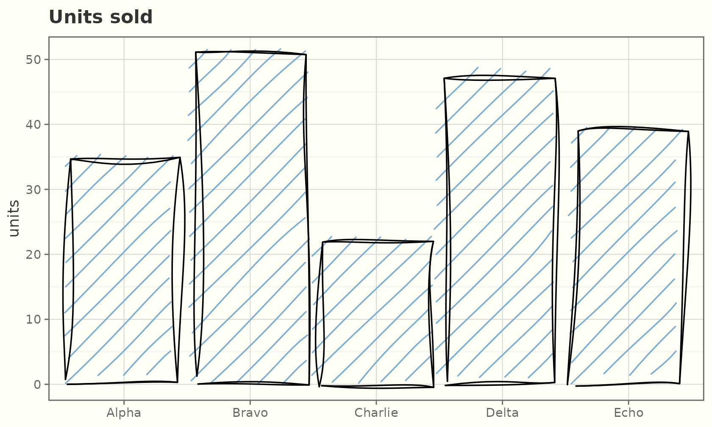
Map fill to a variable like any ggplot2 bar. Each bar
gets its own seed offset, so no two bars wobble identically.
ggplot(sales, aes(product, units, fill = product)) +
geom_sketch_col(seed = 2L, show.legend = FALSE) +
scale_fill_brewer(palette = "Set2") +
labs(title = "Mapped fill", x = NULL) +
theme_sketch()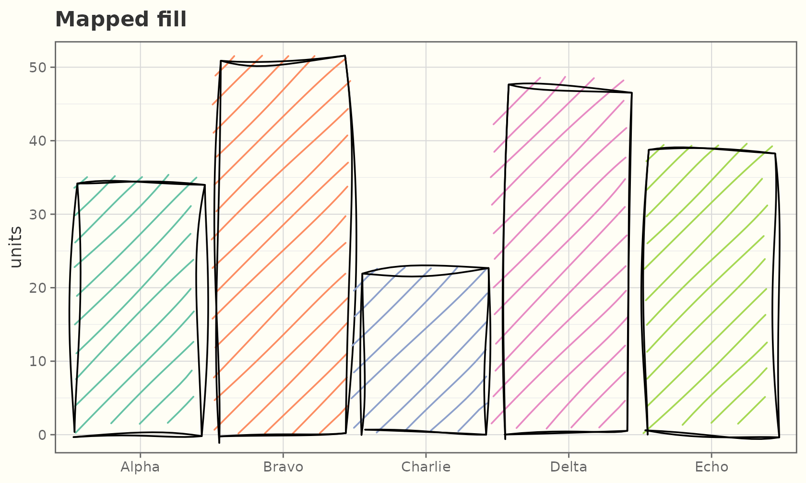
geom_sketch_bar() counts rows for you (like
geom_bar()):
ggplot(mpg, aes(class)) +
geom_sketch_bar(fill = "#C39BD3", seed = 3L) +
labs(title = "Vehicle count by class", x = NULL) +
theme_sketch() +
theme(axis.text.x = element_text(angle = 30, hjust = 1))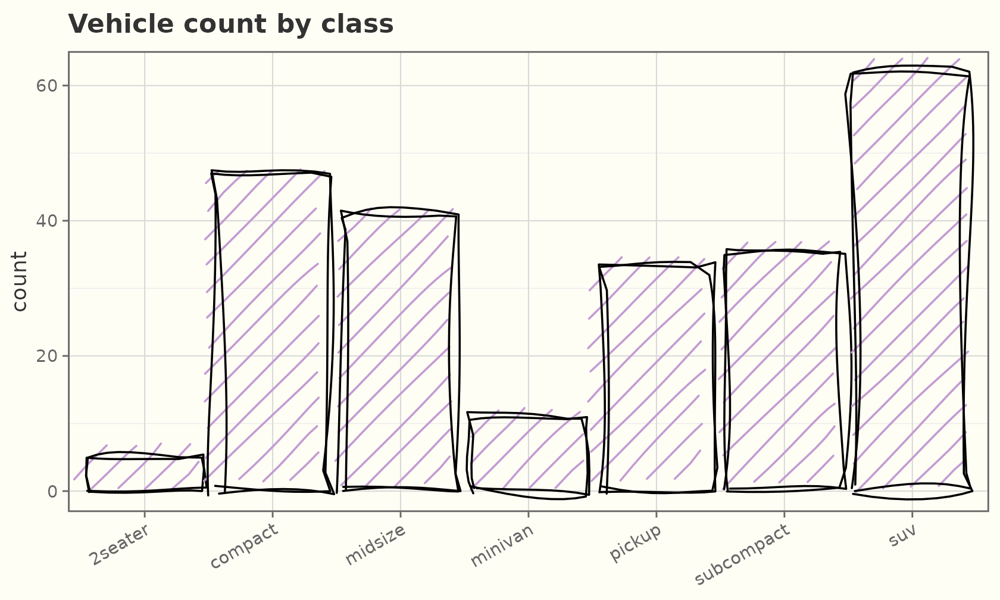
Bars flip and stack just like the originals:
ggplot(sales, aes(reorder(product, units), units)) +
geom_sketch_col(fill = "#F1948A", seed = 1L) +
coord_flip() +
labs(title = "Horizontal bars", x = NULL) +
theme_sketch()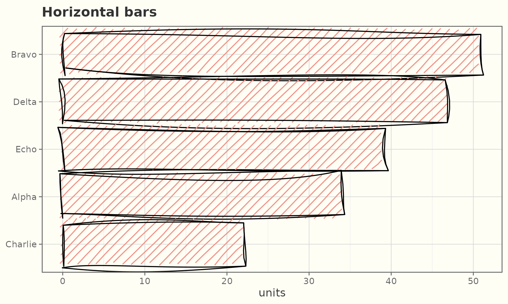
Chicklet charts
geom_sketch_chicklet() is the hand-drawn take on
ggchicklet::geom_chicklet(): a stacked bar whose segments
are separately rounded “pills” with a small gap between them. Add
coord_flip() for the classic horizontal layout.
seasons <- expand.grid(season = factor(2019:2024),
result = c("Win", "Draw", "Loss"))
seasons$games <- c(22, 18, 14, 20, 25, 19,
8, 10, 12, 9, 6, 11,
8, 10, 12, 9, 7, 8)
ggplot(seasons, aes(season, games, fill = result)) +
geom_sketch_chicklet(seed = 3L) +
coord_flip() +
scale_fill_manual(values = c(Win = "#4C9F70", Draw = "#E4B363",
Loss = "#C1666B")) +
labs(title = "Season results by outcome", x = NULL, y = "Games",
fill = NULL) +
theme_sketch()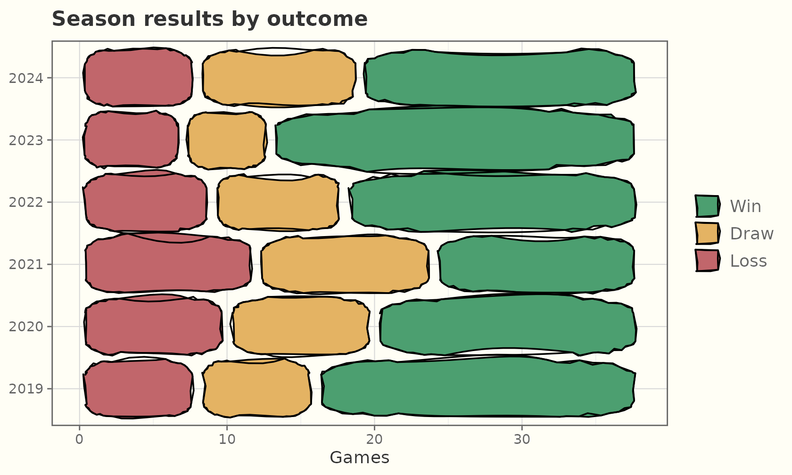
Lollipops
geom_sketch_lollipop() is a tidy alternative to bars for
ranked or sparse values: a roughened stem from a baseline
capped with a sketch point. The value axis expands to include the
baseline.
ggplot(sales, aes(reorder(product, units), units)) +
geom_sketch_lollipop(colour = "#7B241C", seed = 1L) +
labs(title = "Units sold", x = NULL) +
theme_sketch()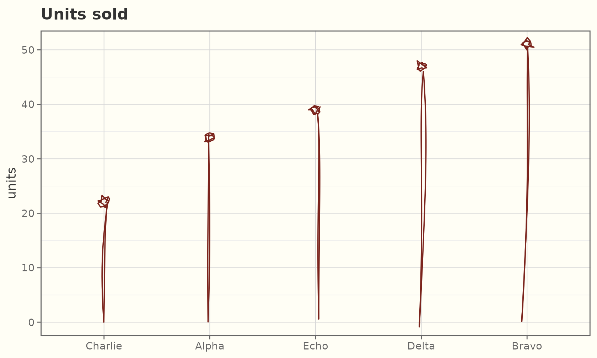
Histograms and frequency polygons
geom_sketch_histogram() bins a continuous variable and
draws hand-drawn bars; geom_sketch_freqpoly() draws the
same counts as a roughened line.
ggplot(faithful, aes(eruptions)) +
geom_sketch_histogram(fill = "#7BAFD4", bins = 20, seed = 1L) +
labs(title = "Old Faithful eruption times") +
theme_sketch()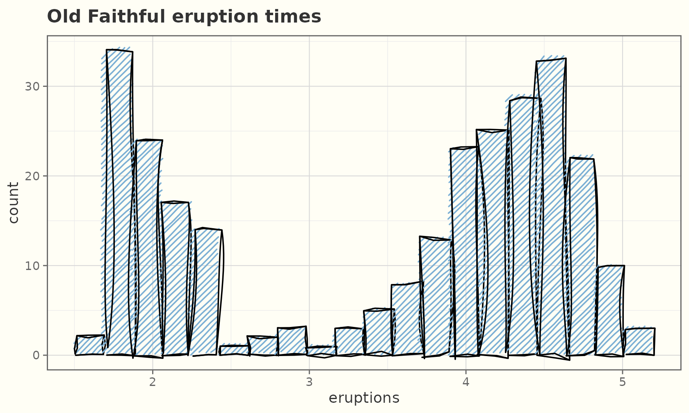
ggplot(mpg, aes(hwy, colour = drv)) +
geom_sketch_freqpoly(bins = 15, linewidth = 0.9, seed = 2L) +
labs(title = "Highway mpg by drivetrain", x = "hwy") +
theme_sketch()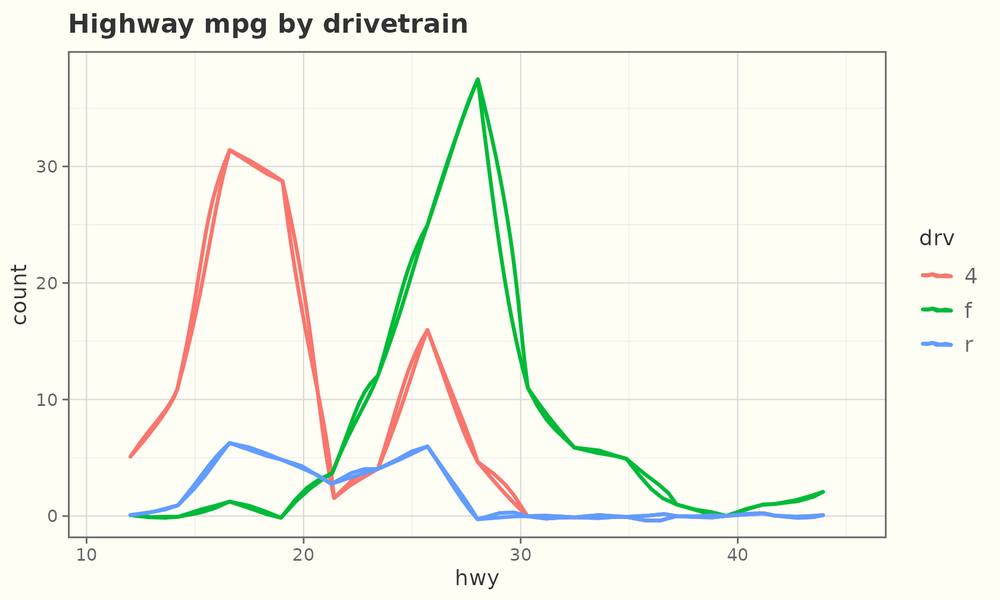
Dot plots
geom_sketch_dotplot() bins the data and stacks one
roughened circular dot per observation. The dots are sized by the bin
width, so the count axis is approximate — turn it off for a clean
look.
ggplot(faithful, aes(eruptions)) +
geom_sketch_dotplot(binwidth = 0.12, fill = "#7BAFD4", seed = 1L) +
scale_y_continuous(NULL, breaks = NULL) +
labs(title = "Old Faithful eruption times") +
theme_sketch()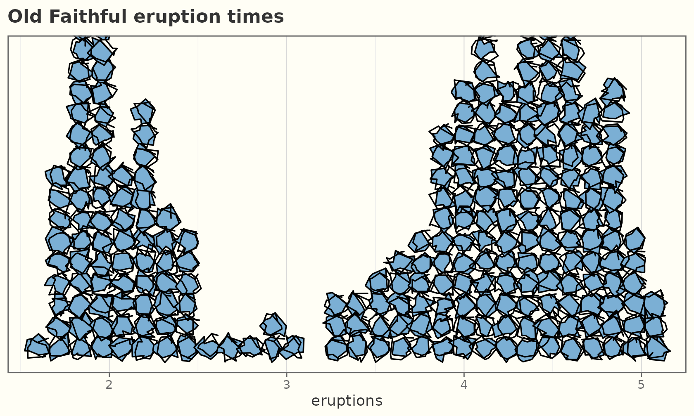
Empirical CDF
geom_sketch_ecdf() draws the empirical cumulative
distribution as a hand-drawn stairstep.
ggplot(mpg, aes(hwy, colour = drv)) +
geom_sketch_ecdf(linewidth = 0.8, seed = 1L) +
labs(title = "Highway mpg ECDF by drivetrain", y = "F(x)") +
theme_sketch()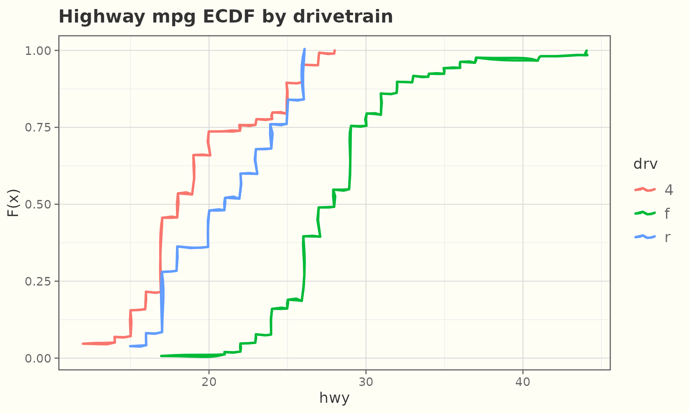
Lines, paths, and points
econ <- economics[economics$date > as.Date("2000-01-01"), ]
ggplot(econ, aes(date, unemploy)) +
geom_sketch_line(colour = "steelblue", linewidth = 0.8, seed = 1L) +
labs(title = "US unemployment", x = NULL, y = "thousands") +
theme_sketch()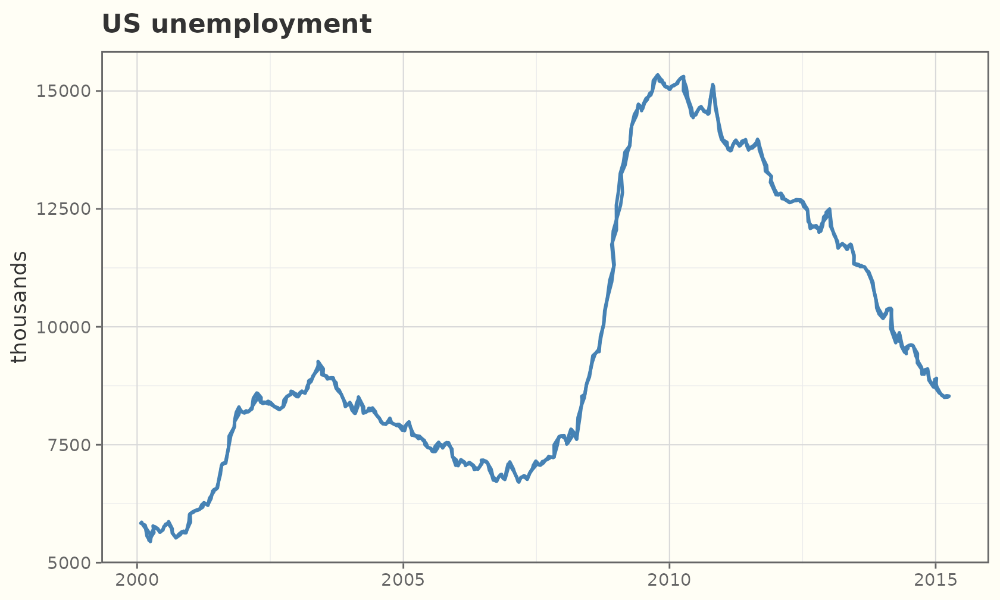
geom_sketch_point() draws each point as a small
roughened ellipse:
ggplot(mtcars, aes(wt, mpg, colour = factor(cyl))) +
geom_sketch_point(size = 4, seed = 1L) +
scale_colour_brewer("cylinders", palette = "Dark2") +
labs(title = "Fuel economy vs weight") +
theme_sketch()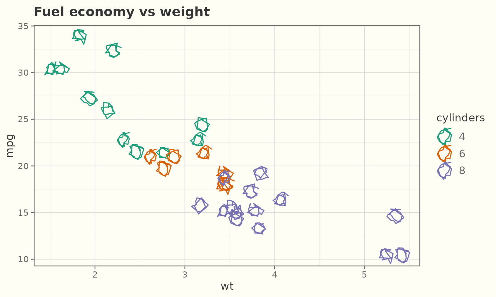
Lines and points compose like any layers:
df <- data.frame(x = 1:12, y = c(3, 5, 4, 7, 6, 9, 8, 11, 9, 12, 11, 14))
ggplot(df, aes(x, y)) +
geom_sketch_line(colour = "grey40", seed = 3L) +
geom_sketch_point(size = 4, colour = "firebrick", seed = 8L) +
labs(title = "Trend with markers") +
theme_sketch()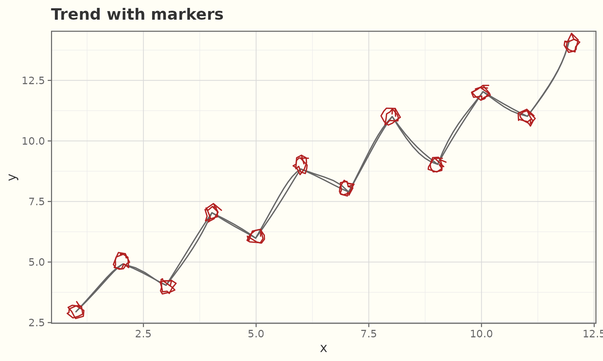
Multiple groups, one seed per group:
ggplot(ggplot2::economics_long, aes(date, value01, colour = variable)) +
geom_sketch_line(seed = 5L) +
labs(title = "Five series, hand-drawn", x = NULL, y = NULL) +
theme_sketch()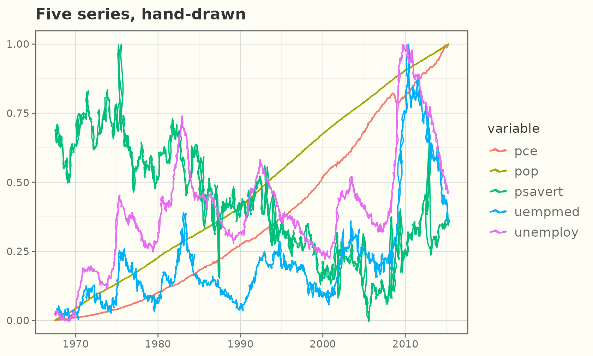
Point sizes
size behaves like any ggplot2 point size. Set it to a
constant for bigger or smaller markers:
sz <- data.frame(x = 1:5, y = 1, s = c(2, 4, 6, 9, 13))
ggplot(sz, aes(x, y)) +
geom_sketch_point(size = sz$s, colour = "#2E86C1", seed = 1L) +
labs(title = "Fixed point sizes (2 → 13)", x = NULL, y = NULL) +
theme_sketch()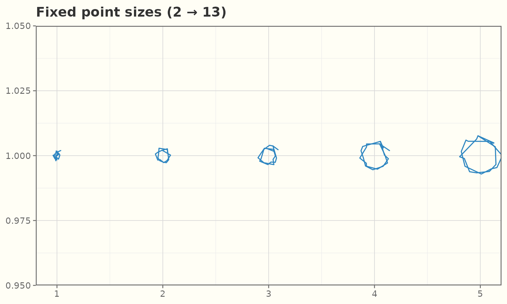
Or map size to a variable for a bubble chart — pair it
with scale_size_area() so the area (not radius)
encodes the value:
ggplot(mtcars, aes(wt, mpg, size = hp, colour = factor(cyl))) +
geom_sketch_point(alpha = 0.9, seed = 2L) +
scale_size_area("horsepower", max_size = 14) +
scale_colour_brewer("cylinders", palette = "Dark2") +
labs(title = "Bubble chart: size = horsepower") +
theme_sketch()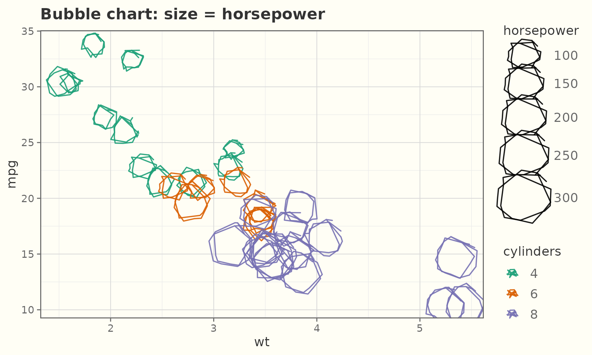
A small-multiples sweep of a single size aesthetic:
grid <- expand.grid(x = 1:6, y = 1:3)
grid$s <- seq(1.5, 11, length.out = nrow(grid))
ggplot(grid, aes(x, y, size = s)) +
geom_sketch_point(colour = "#884EA0", show.legend = FALSE, seed = 3L) +
scale_size_identity() +
labs(title = "Increasing point size", x = NULL, y = NULL) +
theme_sketch()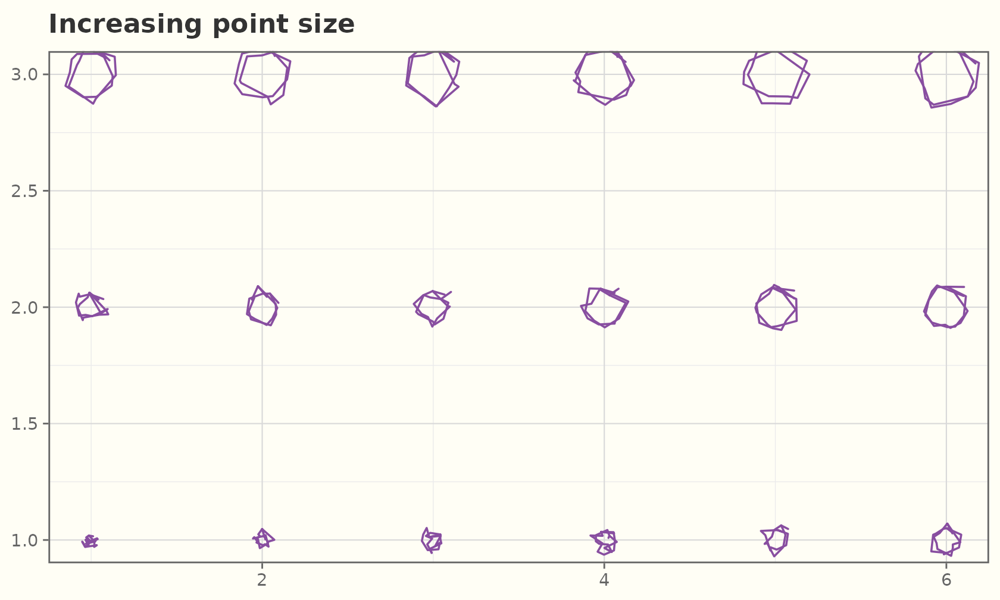
Point roughness
For geom_sketch_point(), roughness is a
mappable aesthetic. As a constant it sets how wobbly every
marker is — from clean circles up to very shaky:
rg <- data.frame(x = 1:4, y = 1, r = c(0, 0.4, 0.9, 1.6))
ggplot(rg, aes(x, y)) +
geom_sketch_point(aes(roughness = I(r)), size = 14, colour = "#2E86C1",
seed = 1L) +
geom_sketch_text(aes(label = r), nudge_y = -0.5, size = 6) +
labs(title = "roughness 0 → 1.6 (constant per point)",
x = NULL, y = NULL) +
ylim(0.3, 1.3) +
theme_sketch() +
theme(axis.text = element_blank())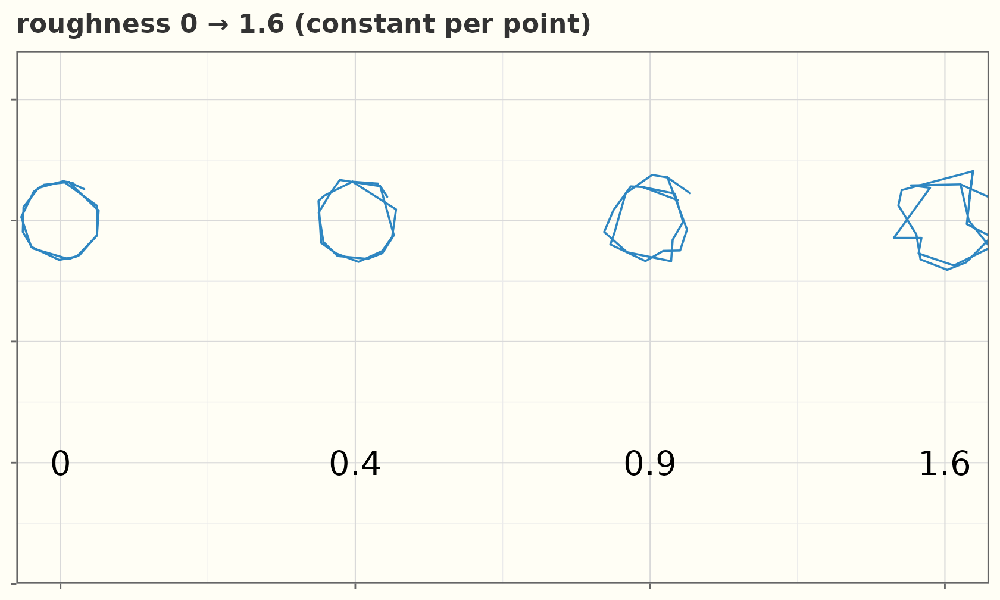
Map it to a variable and the values are rescaled to a legible band by
scale_roughness_continuous() (applied automatically,
default c(0.01, 0.75)), so points can encode a third
variable through how shaky they look:
ggplot(mtcars, aes(wt, mpg, roughness = hp, colour = factor(cyl))) +
geom_sketch_point(size = 4, seed = 1L) +
scale_colour_brewer("cylinders", palette = "Dark2") +
labs(title = "roughness mapped to horsepower") +
theme_sketch()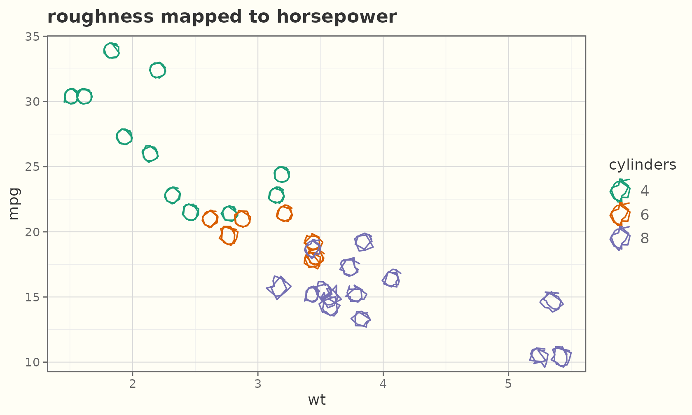
Use I() to pass raw roughness through unscaled, or
scale_roughness_continuous(range = ...) to widen the
band.
Jitter and count
geom_sketch_jitter() spreads overplotted points;
geom_sketch_count() sizes a single point by how many
observations sit there.
ggplot(mpg, aes(class, hwy)) +
geom_sketch_jitter(width = 0.2, height = 0, colour = "#5D6D7E",
size = 2, seed = 1L) +
labs(title = "Jittered highway mpg", x = NULL) +
theme_sketch() +
theme(axis.text.x = element_text(angle = 30, hjust = 1))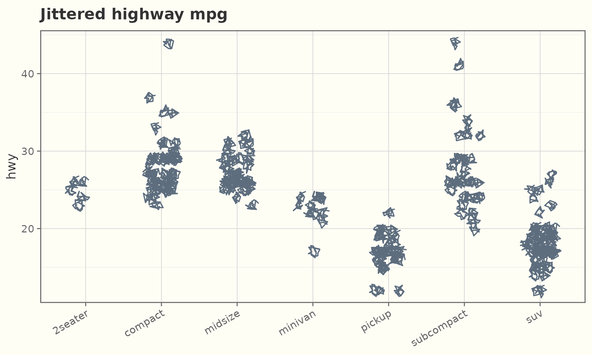
ggplot(mpg, aes(cty, hwy)) +
geom_sketch_count(colour = "#C0392B", seed = 2L) +
scale_size_area(max_size = 8) +
labs(title = "Overplot count") +
theme_sketch()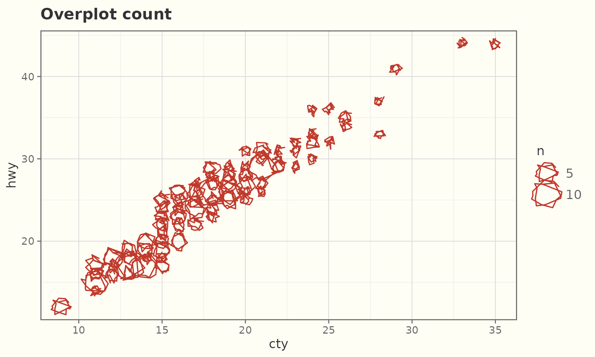
Rectangles and tiles
rects <- data.frame(xmin = c(1, 3, 5), xmax = c(2, 4, 6),
ymin = 0, ymax = c(2, 4, 3))
ggplot(rects) +
geom_sketch_rect(aes(xmin = xmin, xmax = xmax, ymin = ymin, ymax = ymax,
fill = factor(xmin)),
seed = 1L, show.legend = FALSE) +
labs(title = "geom_sketch_rect()") +
theme_sketch()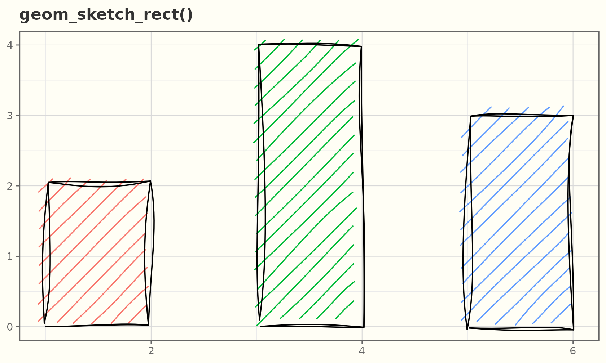
A sketchy heatmap with geom_sketch_tile():
td <- expand.grid(x = 1:8, y = 1:6)
td$z <- td$x + td$y
ggplot(td, aes(x, y, fill = z)) +
geom_sketch_tile(seed = 2L, hachure_gap = 0.18) +
scale_fill_viridis_c() +
labs(title = "geom_sketch_tile()") +
theme_sketch()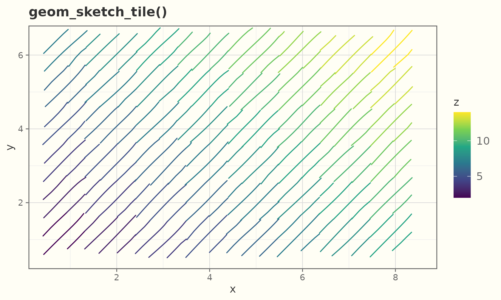
A sketchy 2-D bin heatmap with geom_sketch_bin2d()
(cells default to a hachure fill, shaded by count):
ggplot(faithful, aes(eruptions, waiting)) +
geom_sketch_bin2d(bins = 12, seed = 3L) +
scale_fill_viridis_c() +
labs(title = "geom_sketch_bin2d()") +
theme_sketch()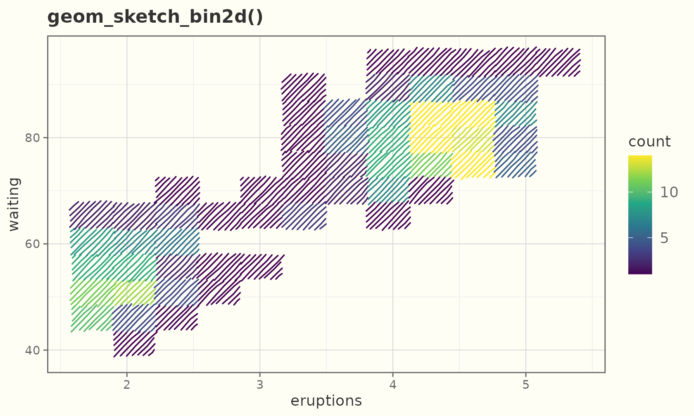
geom_sketch_hex() bins into hexagons instead (needs the
hexbin package):
ggplot(faithful, aes(eruptions, waiting)) +
geom_sketch_hex(bins = 12, seed = 4L) +
scale_fill_viridis_c(option = "magma") +
labs(title = "geom_sketch_hex()") +
theme_sketch()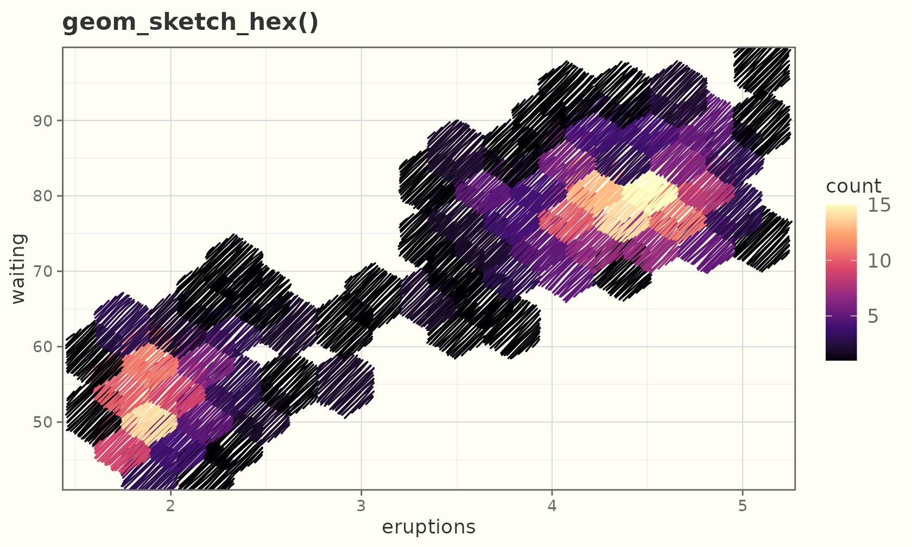
Polygons, ribbons, areas, and densities
Concave polygons fill correctly (the hachure respects every notch):
ang <- seq(0, 2 * pi, length.out = 11)[-11]
r <- rep(c(1, 0.45), length.out = 10)
star <- data.frame(x = r * cos(ang), y = r * sin(ang))
ggplot(star, aes(x, y)) +
geom_sketch_polygon(fill = "tomato", seed = 1L) +
coord_equal() +
labs(title = "A concave star") +
theme_sketch()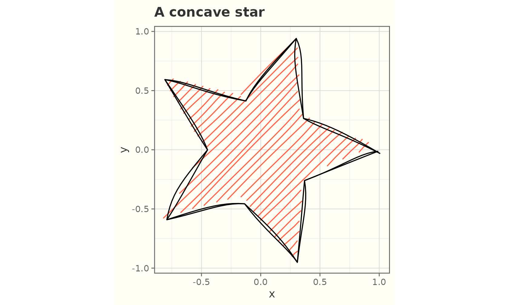
band <- data.frame(x = 1:20)
band$y <- 10 + 5 * sin(seq(0, 3 * pi, length.out = 20))
band$lo <- band$y - 2
band$hi <- band$y + 2
ggplot(band, aes(x)) +
geom_sketch_ribbon(aes(ymin = lo, ymax = hi), fill = "plum", seed = 2L) +
geom_sketch_line(aes(y = y), seed = 3L) +
labs(title = "Ribbon + line") +
theme_sketch()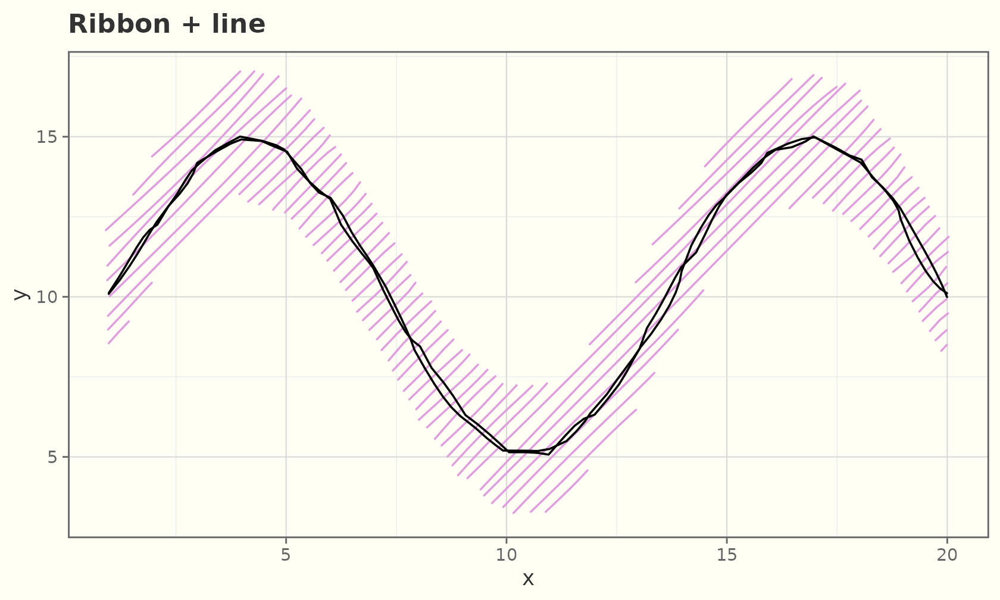
ggplot(band, aes(x, y)) +
geom_sketch_area(fill = "lightgreen", seed = 3L) +
labs(title = "geom_sketch_area()") +
theme_sketch()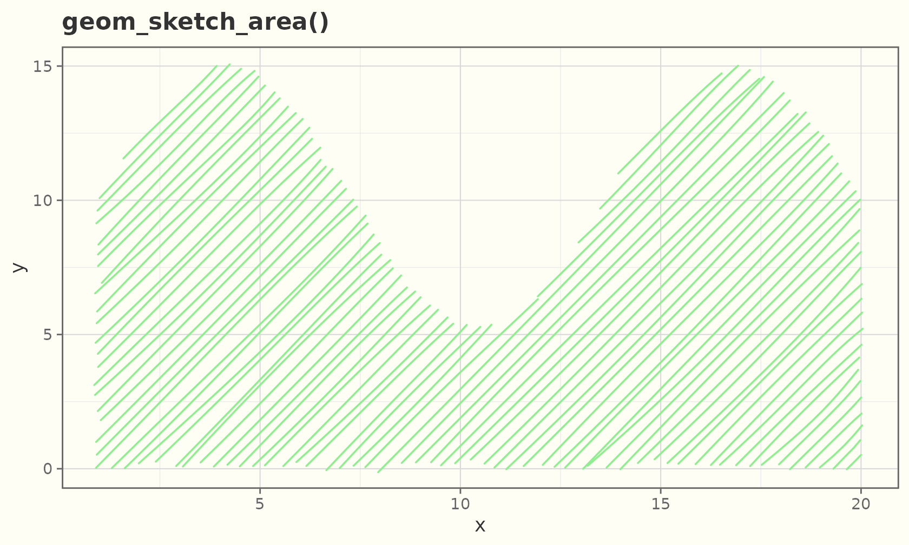
ggplot(faithful, aes(eruptions)) +
geom_sketch_density(fill = "khaki", seed = 4L) +
labs(title = "Old Faithful eruptions") +
theme_sketch()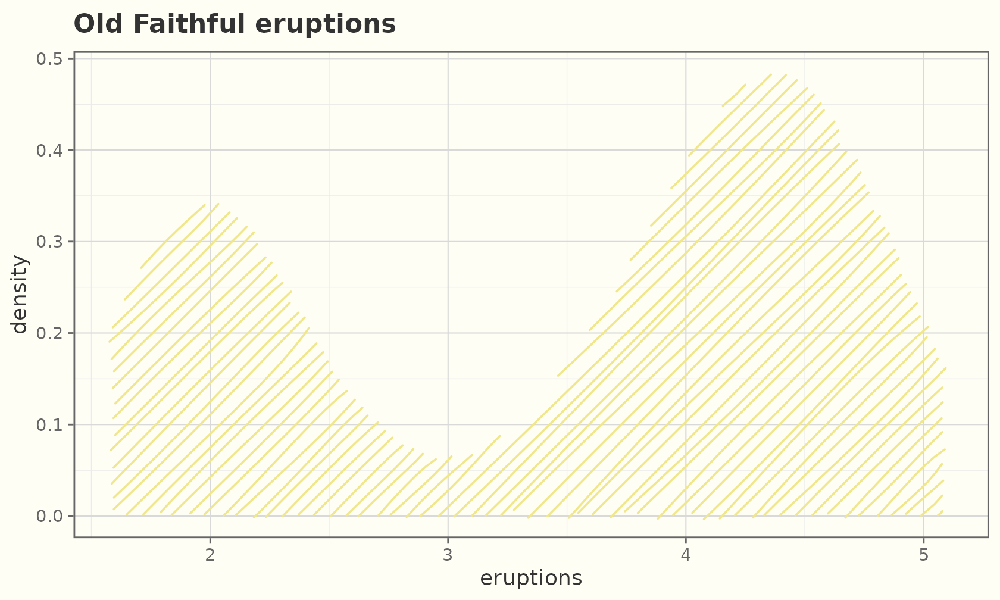
Violins
geom_sketch_violin() mirrors a kernel density into a
closed polygon and hachure-fills it.
ggplot(mpg, aes(class, hwy, fill = class)) +
geom_sketch_violin(seed = 1L, show.legend = FALSE) +
scale_fill_brewer(palette = "Set3") +
labs(title = "Highway mpg distribution by class", x = NULL) +
theme_sketch() +
theme(axis.text.x = element_text(angle = 30, hjust = 1))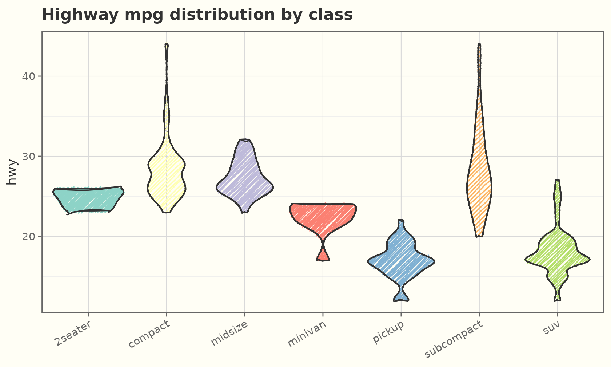
Smooths
A hand-drawn fit with a roughened confidence band:
ggplot(mtcars, aes(wt, mpg)) +
geom_sketch_point(seed = 1L) +
geom_sketch_smooth(method = "lm", formula = y ~ x, seed = 2L) +
labs(title = "Linear fit with CI band") +
theme_sketch()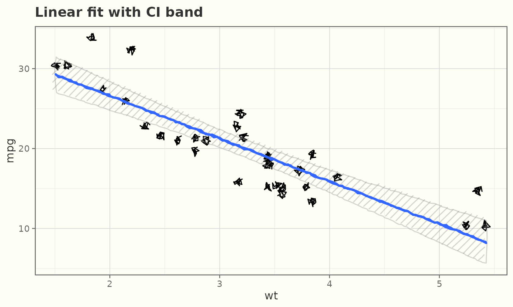
ggplot(mpg, aes(displ, hwy)) +
geom_sketch_point(colour = "grey50", seed = 1L) +
geom_sketch_smooth(seed = 2L, colour = "darkorange") +
labs(title = "loess fit") +
theme_sketch()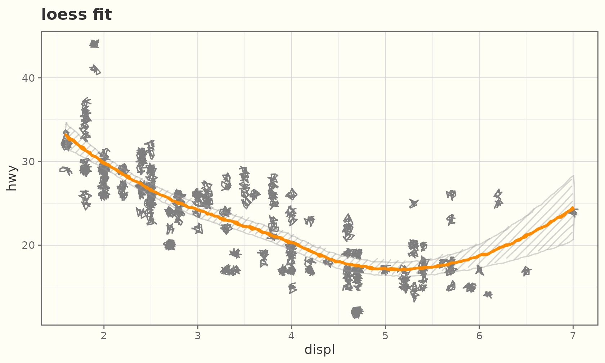
Function curves
geom_sketch_function() sketches an analytic curve over
the x range, for example to overlay a theoretical density.
ggplot(data.frame(x = c(-4, 4)), aes(x)) +
geom_sketch_function(fun = dnorm, colour = "#2E86C1", linewidth = 0.9,
seed = 1L) +
geom_sketch_function(fun = dnorm, args = list(sd = 1.6),
colour = "#C0392B", linewidth = 0.9, seed = 2L) +
labs(title = "Two normal densities", y = "density") +
theme_sketch()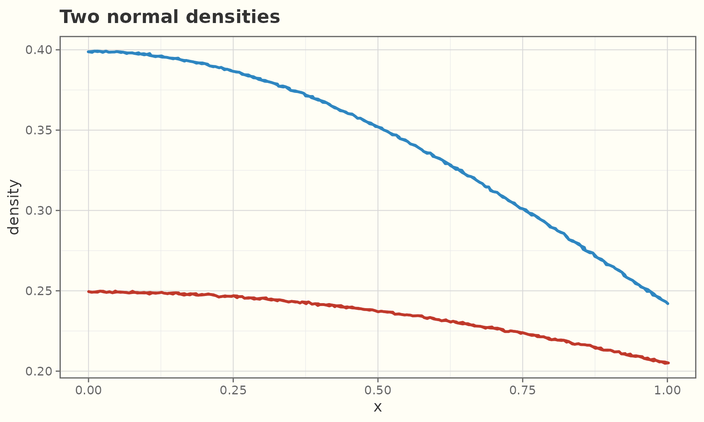
Q-Q plots
geom_sketch_qq() draws the quantile-quantile points and
geom_sketch_qq_line() the reference line. Map data to the
sample aesthetic.
ggplot(mtcars, aes(sample = mpg)) +
geom_sketch_qq(size = 2.5, seed = 1L) +
geom_sketch_qq_line(colour = "#C8553D", linewidth = 0.8, seed = 2L) +
labs(title = "Normal Q-Q plot of mpg", x = "theoretical", y = "sample") +
theme_sketch()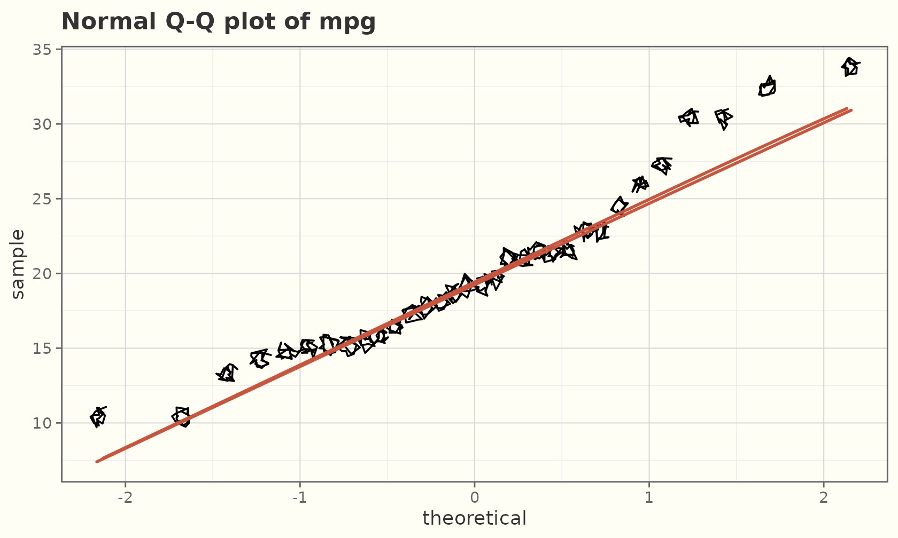
Quantile regression
geom_sketch_quantile() fits and draws quantile
regression lines (requires the optional quantreg
package).
ggplot(mpg, aes(displ, hwy)) +
geom_sketch_point(colour = "grey60", seed = 1L) +
geom_sketch_quantile(quantiles = c(0.1, 0.5, 0.9), colour = "#6C3483",
linewidth = 0.9, seed = 2L) +
labs(title = "10th / 50th / 90th percentile fits") +
theme_sketch()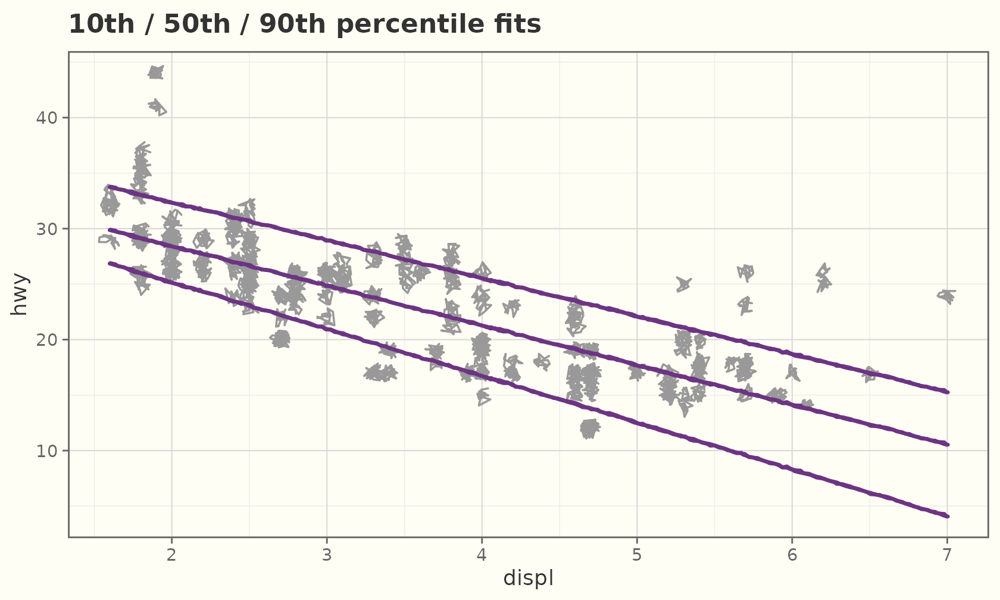
Circles and ellipses
Radii are in data units, so use coord_equal() for true
circles:
cdf <- data.frame(x = c(1, 3, 2), y = c(1, 1, 2.5),
r = c(0.6, 0.9, 0.5), grp = c("a", "b", "c"))
ggplot(cdf, aes(x, y, r = r, fill = grp)) +
geom_sketch_circle(seed = 1L, show.legend = FALSE) +
coord_equal() +
labs(title = "geom_sketch_circle()") +
theme_sketch()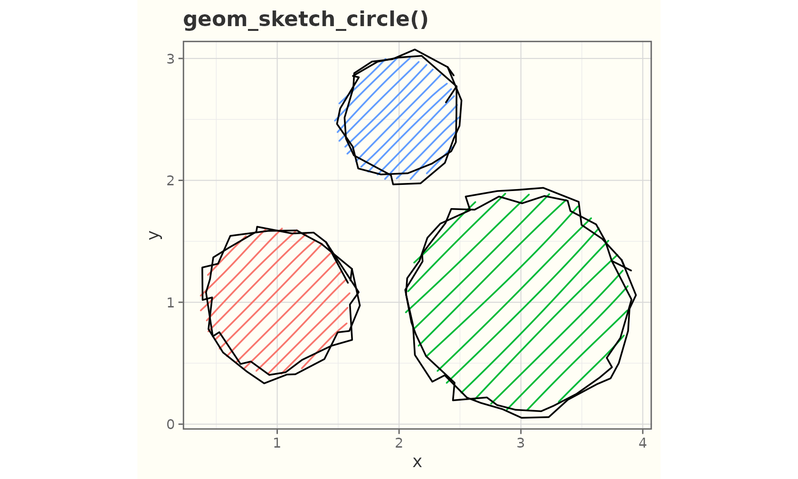
edf <- data.frame(x = c(1, 3), y = c(1, 2), a = c(1.4, 0.8), b = c(0.6, 1.2))
ggplot(edf, aes(x, y, a = a, b = b, fill = factor(x))) +
geom_sketch_ellipse(seed = 2L, show.legend = FALSE) +
coord_equal() +
labs(title = "geom_sketch_ellipse()") +
theme_sketch()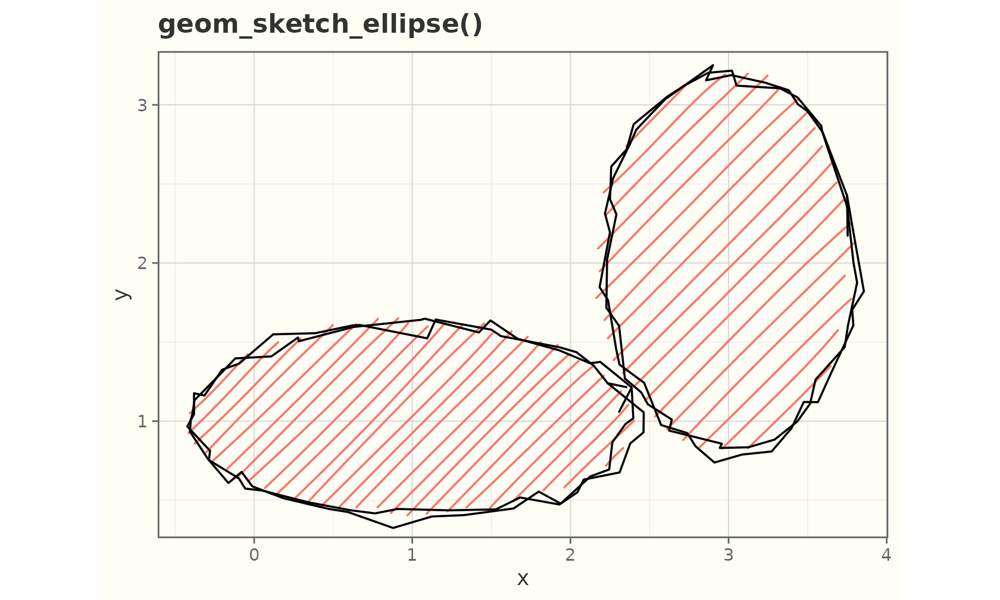
Segments and steps
sdf <- data.frame(x = 1:4, y = c(1, 3, 2, 4),
xend = 2:5, yend = c(3, 1, 4, 2))
ggplot(sdf) +
geom_sketch_segment(aes(x = x, y = y, xend = xend, yend = yend),
colour = "darkgreen", linewidth = 1, seed = 3L) +
labs(title = "geom_sketch_segment()") +
theme_sketch()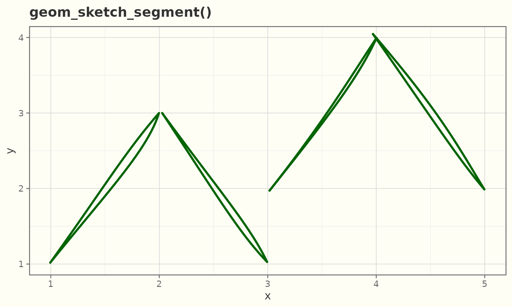
stp <- data.frame(x = 1:8, y = c(1, 3, 2, 5, 4, 6, 5, 8))
ggplot(stp, aes(x, y)) +
geom_sketch_step(colour = "purple", linewidth = 1, seed = 4L) +
geom_sketch_point(seed = 5L) +
labs(title = "geom_sketch_step()") +
theme_sketch()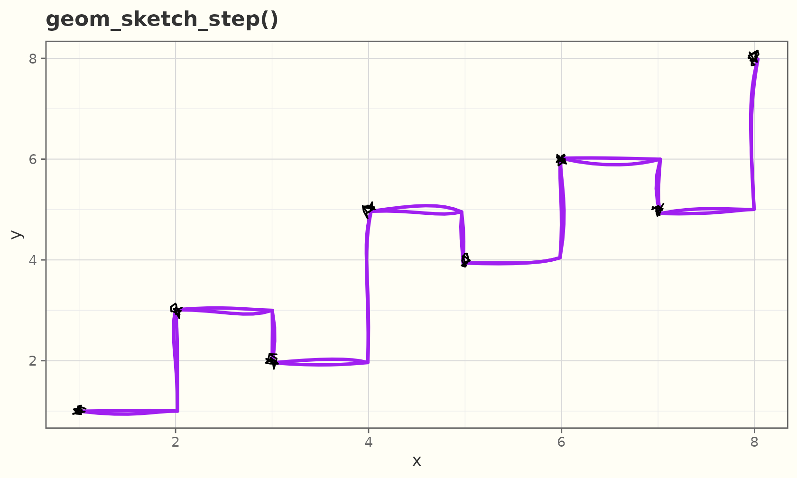
Curves and spokes
geom_sketch_curve() is a curved connector (a quadratic
Bézier); curvature sets how much it bends.
cdf <- data.frame(x = c(1, 1, 1), y = c(1, 2, 3),
xend = c(4, 4, 4), yend = c(1, 2, 3))
ggplot(cdf, aes(x, y)) +
geom_sketch_curve(aes(xend = xend, yend = yend), curvature = 0.4,
colour = "#1A5276", linewidth = 0.9, seed = 1L) +
geom_sketch_point(seed = 2L) +
geom_sketch_point(aes(x = xend, y = yend), seed = 3L) +
labs(title = "geom_sketch_curve()") +
theme_sketch()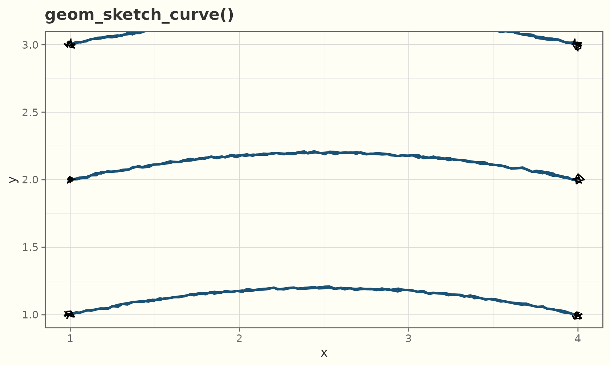
geom_sketch_spoke() draws a segment from each point by
angle and radius — useful for vector
fields.
field <- expand.grid(x = 1:6, y = 1:6)
field$angle <- with(field, atan2(y - 3.5, x - 3.5))
field$radius <- 0.6
ggplot(field, aes(x, y)) +
geom_sketch_spoke(aes(angle = angle, radius = radius),
colour = "#117A65", seed = 1L) +
geom_sketch_point(size = 1.5, seed = 2L) +
coord_equal() +
labs(title = "geom_sketch_spoke()") +
theme_sketch()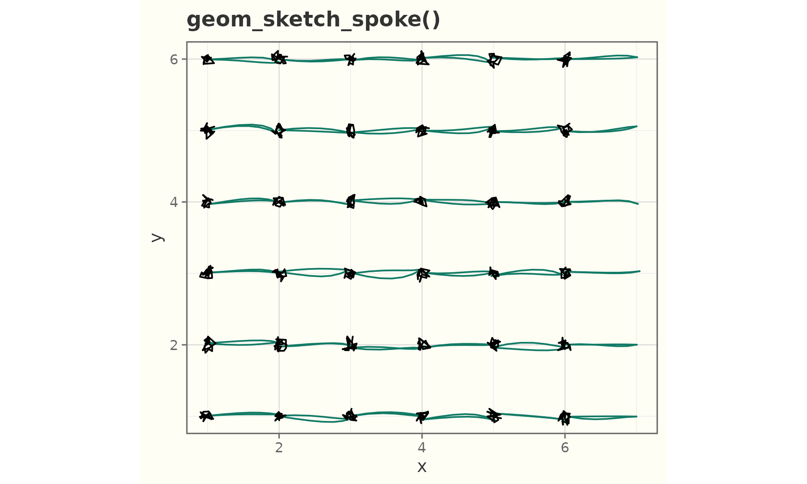
Rugs
geom_sketch_rug() adds marginal ticks along the panel
edges (sides).
ggplot(mtcars, aes(wt, mpg)) +
geom_sketch_point(colour = "#2C3E50", seed = 1L) +
geom_sketch_rug(sides = "bl", colour = "#7B241C", seed = 2L) +
labs(title = "Scatter with marginal rug") +
theme_sketch()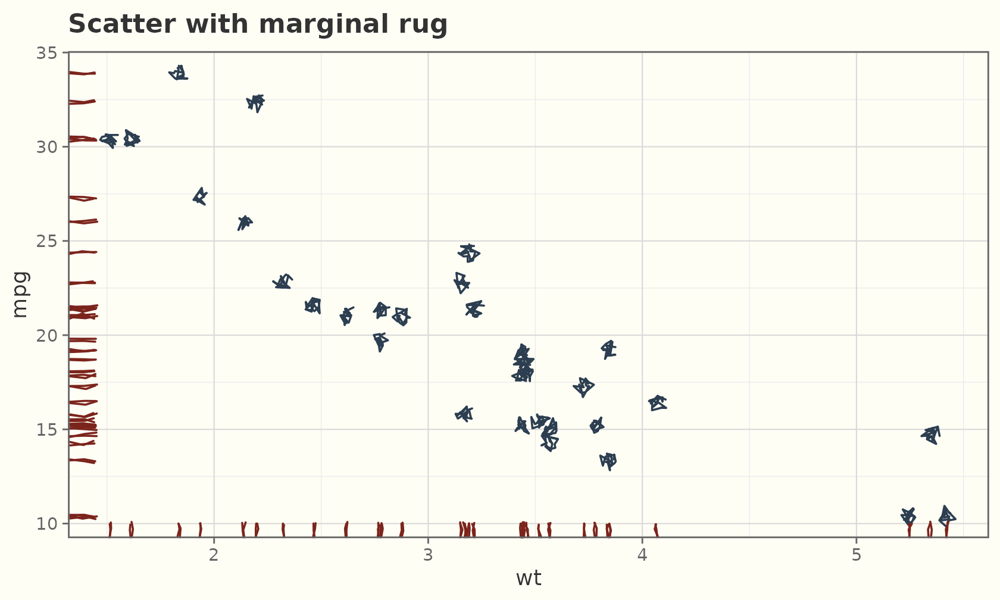
Intervals and uncertainty
The interval family draws hand-drawn ranges:
geom_sketch_linerange(),
geom_sketch_pointrange(),
geom_sketch_errorbar(), and
geom_sketch_crossbar().
est <- data.frame(
group = c("A", "B", "C", "D"),
mean = c(4.1, 5.6, 3.2, 6.0),
lo = c(3.2, 4.9, 2.4, 5.1),
hi = c(5.0, 6.4, 4.1, 6.8)
)
ggplot(est, aes(group, mean)) +
geom_sketch_pointrange(aes(ymin = lo, ymax = hi), colour = "#1F618D",
seed = 1L) +
labs(title = "Point estimates with 95% intervals", x = NULL) +
theme_sketch()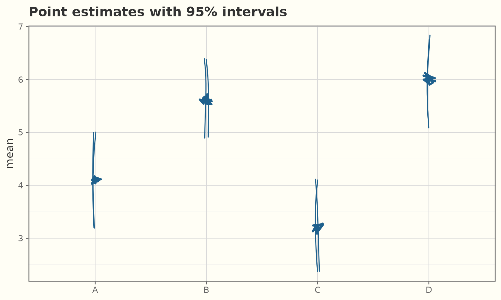
ggplot(est, aes(group, mean)) +
geom_sketch_col(fill = "#AED6F1", width = 0.6, seed = 1L) +
geom_sketch_errorbar(aes(ymin = lo, ymax = hi), width = 0.3, seed = 2L) +
labs(title = "Bars with error bars", x = NULL) +
theme_sketch()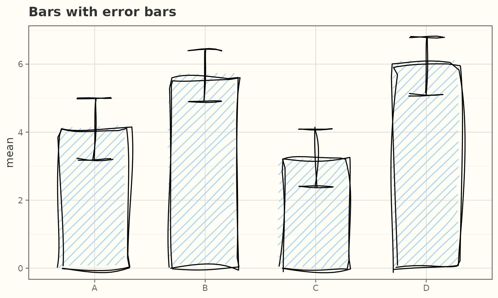
ggplot(est, aes(group, mean)) +
geom_sketch_crossbar(aes(ymin = lo, ymax = hi), fill = "#FCF3CF",
fill_style = "hachure", seed = 3L) +
labs(title = "geom_sketch_crossbar()", x = NULL) +
theme_sketch()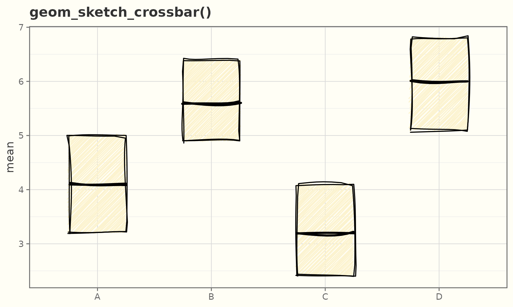
Reference lines
geom_sketch_abline(), geom_sketch_hline(),
and geom_sketch_vline() span the panel with a gentle
wobble.
ggplot(mtcars, aes(wt, mpg)) +
geom_sketch_point(seed = 1L) +
geom_sketch_hline(yintercept = 20, colour = "#C0392B", seed = 2L) +
geom_sketch_vline(xintercept = 3.3, colour = "#2471A3", seed = 3L) +
geom_sketch_abline(slope = -5, intercept = 37, colour = "#117864",
linetype = 2, seed = 4L) +
labs(title = "Reference lines") +
theme_sketch()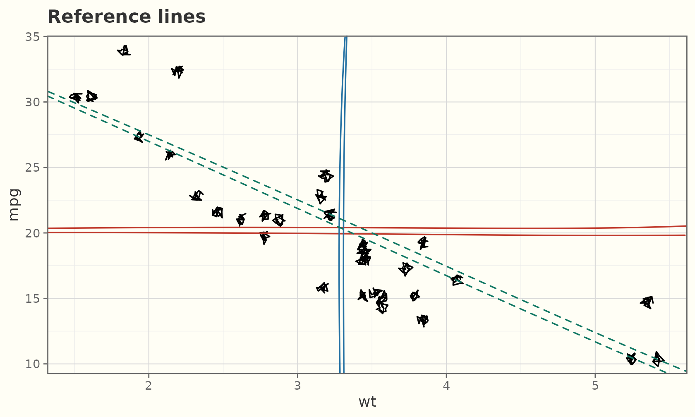
Contours and 2-D density
geom_sketch_contour() draws contour lines of a surface
(needs z); geom_sketch_density2d() contours a
2-D kernel density estimate.
ggplot(faithfuld, aes(waiting, eruptions, z = density)) +
geom_sketch_contour(colour = "#2E4053", seed = 1L) +
labs(title = "geom_sketch_contour()") +
theme_sketch()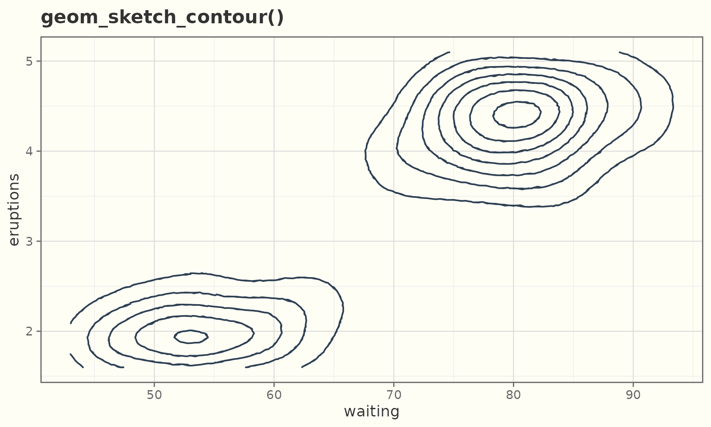
ggplot(faithful, aes(eruptions, waiting)) +
geom_sketch_point(colour = "grey70", seed = 1L) +
geom_sketch_density2d(colour = "#884EA0", linewidth = 0.7, seed = 2L) +
labs(title = "geom_sketch_density2d()") +
theme_sketch()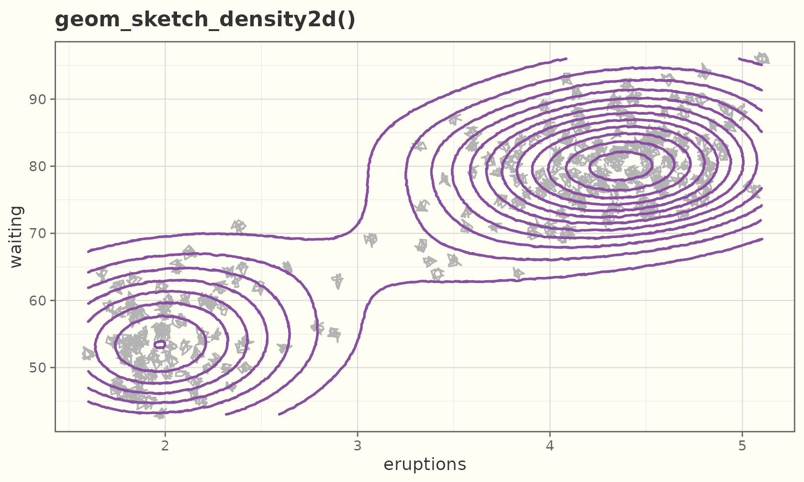
geom_sketch_contour_filled() fills the bands
between levels instead of just the lines. Each band may contain holes
(the next level up, cut out); a hole-aware filler keeps them empty, so
fill_style = "hachure" works too.
ggplot(faithfuld, aes(waiting, eruptions, z = density)) +
geom_sketch_contour_filled(seed = 1L) +
labs(title = "geom_sketch_contour_filled()") +
theme_sketch()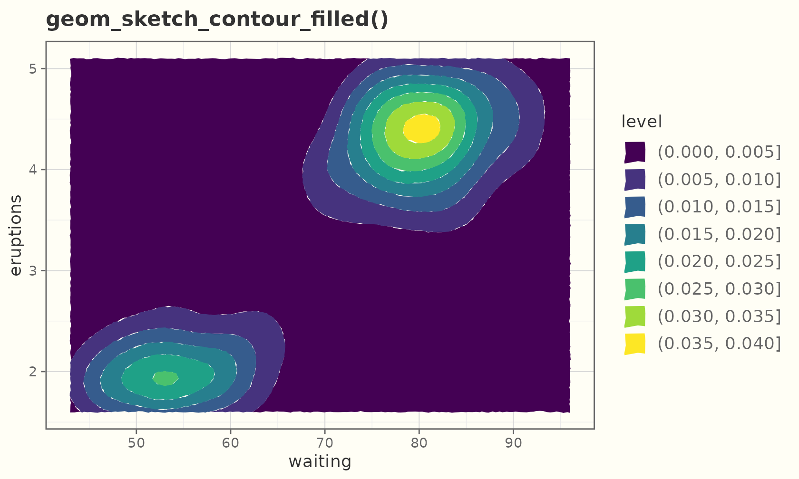
ggplot(faithful, aes(eruptions, waiting)) +
geom_sketch_density_2d_filled(fill_style = "hachure", seed = 2L) +
labs(title = "geom_sketch_density_2d_filled() (hachure)") +
theme_sketch()Engraving and tonal shading
geom_sketch_engrave() shades a surface the way an etcher
or banknote engraver does: continuous tone is built from the
density of hatch lines, with cross-hatching deepening the
shadows. It takes an x/y/z grid;
high z is dark. Unlike the fill-pattern packages it
computes tone from geometry rather than tiling a motif.
ggplot(faithfuld, aes(waiting, eruptions, z = density)) +
geom_sketch_engrave(seed = 1L) +
labs(title = "geom_sketch_engrave()") +
theme_sketch()With no pre-computed grid, shade raw points through a density stat:
ggplot(faithful, aes(eruptions, waiting)) +
geom_sketch_engrave(stat = "density_2d", contour = FALSE,
aes(z = after_stat(density)), seed = 1L) +
labs(title = "geom_sketch_engrave() from raw points") +
theme_sketch()geom_sketch_shade() shades each polygon region with a
uniform density set by a tone aesthetic in
[0, 1], so a mapped value reads directly as darkness.
Mapping a raw variable to tone rescales it with
scale_tone_continuous() (alias
scale_engrave()), just as scale_size()
rescales size.
hex <- data.frame(
x = cos(seq(0, 2 * pi, length.out = 7))[-7],
y = sin(seq(0, 2 * pi, length.out = 7))[-7]
)
regions <- do.call(rbind, lapply(1:3, function(k) {
transform(hex, x = x + (k - 1) * 2.3, g = k, val = c(0.25, 0.55, 0.9)[k])
}))
ggplot(regions, aes(x, y, group = g)) +
geom_sketch_shade(aes(tone = val), seed = 2L) +
coord_equal() +
labs(title = "geom_sketch_shade(): value → density") +
theme_sketch()Text
The sketch of text is a handwriting font, not roughened
glyphs. geom_sketch_text() uses the first installed
handwriting face (and falls back to the device default otherwise).
lab <- data.frame(x = c(2, 4, 3), y = c(3, 4, 1.5),
txt = c("hand", "drawn", "labels"))
ggplot(lab, aes(x, y, label = txt)) +
geom_sketch_point(size = 3, colour = "#C0392B") +
geom_sketch_text(size = 7, nudge_y = 0.4) +
scale_x_continuous(expand = expansion(mult = 0.15)) +
scale_y_continuous(expand = expansion(mult = 0.12)) +
labs(title = "geom_sketch_text()") +
theme_sketch()Boxplots
A composed geom: rough IQR box, thick median, whiskers, and sketchy outliers.
ggplot(mpg, aes(class, hwy)) +
geom_sketch_boxplot(seed = 1L) +
labs(title = "Highway mpg by class", x = NULL) +
theme_sketch() +
theme(axis.text.x = element_text(angle = 30, hjust = 1))By default the box is outline-only (its fill is
NA). Give it a fill for a solid box, or map
fill and switch on a fill style for coloured, shaded
boxes:
ggplot(mpg, aes(class, hwy, fill = class)) +
geom_sketch_boxplot(fill_style = "hachure", seed = 1L, show.legend = FALSE) +
scale_fill_brewer(palette = "Pastel1") +
labs(title = "Hachure-filled boxes", x = NULL) +
theme_sketch() +
theme(axis.text.x = element_text(angle = 30, hjust = 1))Annotations
annotate_sketch() adds one-off hand-drawn marks (no
aes() inheritance):
ggplot(mtcars, aes(wt, mpg)) +
geom_sketch_point(seed = 1L) +
annotate_sketch("rect", xmin = 3, xmax = 4, ymin = 15, ymax = 22,
fill = NA, colour = "red", seed = 2L) +
annotate_sketch("segment", x = 2, y = 32, xend = 3.4, yend = 21,
colour = "blue", linewidth = 1, seed = 3L) +
annotate_sketch("circle", x = 5, y = 30, r = 0.4,
colour = "darkgreen", fill = "green", seed = 4L) +
labs(title = "Highlighting with annotate_sketch()") +
theme_sketch()Significance brackets
geom_sketch_bracket() draws a hand-drawn comparison
bracket with an optional handwriting label, for marking pairwise
comparisons (a sketchy ggsignif).
brackets <- data.frame(
xmin = c(1, 2),
xmax = c(2, 3),
y = c(40, 45),
label = c("p = 0.03", "n.s.")
)
ggplot(mpg, aes(drv, hwy)) +
geom_sketch_boxplot(seed = 1L) +
geom_sketch_bracket(
data = brackets,
aes(xmin = xmin, xmax = xmax, y = y, label = label),
seed = 2L
) +
labs(title = "Pairwise comparisons", x = "drivetrain") +
theme_sketch()Pie & annotation toolkit
Pie and donut charts
geom_sketch_pie() draws a hand-drawn pie sized by the
amount aesthetic and coloured by fill. Slices
stay circular on any panel shape, so they look right without
coord_fixed(); pair it with theme_void() to
drop the unused axes.
shares <- data.frame(
group = c("Sketch", "Polish", "Coffee", "Doubt"),
amount = c(40, 25, 20, 15)
)
ggplot(shares, aes(amount = amount, fill = group)) +
geom_sketch_pie(seed = 1L) +
scale_fill_sketch() +
labs(title = "Where the time goes") +
coord_fixed() +
theme_void()geom_sketch_donut() is the same with a hole; any
fill_style hatches the slices instead of filling them
solid.
ggplot(shares, aes(amount = amount, fill = group)) +
geom_sketch_donut(fill_style = "hachure", seed = 2L) +
scale_fill_sketch() +
theme_void()Rounded bars
Rectangular geoms (geom_sketch_rect(),
geom_sketch_tile(),
geom_sketch_col()/bar()) take a
corner_radius for rounded corners — a fraction of each
half-side, so 0 is square and 1 is fully
rounded.
ggplot(shares, aes(group, amount, fill = group)) +
geom_sketch_col(corner_radius = 0.25, fill_style = "solid", seed = 1L,
show.legend = FALSE) +
scale_fill_sketch() +
labs(title = "Rounded columns", x = NULL) +
theme_sketch()Content-aware arrows
annotate_sketch_arrow() points at a feature with a
hand-drawn arrow. It is content-aware: the shaft curves
automatically toward the target, the arrowhead orients to the curve’s
end tangent, and the label sits clear of the shaft. A number for
curvature (or 0 for straight) overrides the
automatic bow, and arrow_type = "closed" gives a filled
head.
ggplot(mtcars, aes(wt, mpg)) +
geom_sketch_point(colour = "grey30", seed = 1L) +
annotate_sketch_arrow(x = 4.1, y = 33, xend = 5.25, yend = 18,
label = "heavy & thirsty", colour = "#C0392B",
seed = 2L) +
annotate_sketch_arrow(x = 2.2, y = 12, xend = 1.7, yend = 30,
label = "light & frugal", colour = "#1F618D",
arrow_type = "closed", seed = 3L) +
labs(title = "Pointing things out") +
theme_sketch()Callouts
annotate_sketch_callout() puts a handwriting note in a
roughened rounded box that auto-sizes to the text, with a leader arrow
to the target. Omit xend/yend for a plain
boxed label.
ggplot(faithful, aes(eruptions, waiting)) +
geom_sketch_point(colour = "grey40", seed = 1L) +
annotate_sketch_callout(x = 2.1, y = 95, label = "short bursts",
xend = 1.9, yend = 75, fill = "#EAF2F8",
colour = "#1F618D", seed = 2L) +
labs(title = "Boxed callouts") +
theme_sketch()Hull marks
geom_sketch_mark_hull() circles a group of points with a
roughened hull — the sketch take on
ggforce::geom_mark_hull(). Map
group/colour/fill to mark each
cluster; with a fill the hull is shaded, otherwise it is
outline-only.
ggplot(iris, aes(Sepal.Length, Sepal.Width, colour = Species)) +
geom_sketch_mark_hull(aes(fill = Species), expand = 0.08, seed = 1L) +
geom_sketch_point(seed = 2L) +
scale_colour_sketch() +
scale_fill_sketch() +
labs(title = "Grouping clusters") +
theme_sketch()Bounding marks
geom_sketch_mark_ellipse(),
geom_sketch_mark_circle(), and
geom_sketch_mark_rect() complete the family — a roughened
ellipse, circle, or rectangle around each group. The panel expands to
fit the mark, so it is never clipped.
ggplot(iris, aes(Sepal.Length, Sepal.Width, colour = Species)) +
geom_sketch_mark_ellipse(aes(fill = Species), seed = 1L) +
geom_sketch_point(seed = 2L) +
scale_colour_sketch() +
scale_fill_sketch() +
labs(title = "Bounding ellipses") +
theme_sketch()
ggplot(iris, aes(Sepal.Length, Sepal.Width, colour = Species)) +
geom_sketch_mark_rect(seed = 3L) +
geom_sketch_point(seed = 2L) +
scale_colour_sketch() +
labs(title = "Bounding rectangles") +
theme_sketch()New in 2.0
ggsketch 2.0 grows in two directions: new chart families (all built from the same roughened grobs, so they inherit every fill style for free) and a drawing-medium simulator — strokes that imitate pencil, ink, brush, charcoal, marker and crayon, watercolour washes, textured papers, and hand-drawn coords.
Dumbbell and slope charts
geom_sketch_dumbbell() draws a connector between two
values per row, capped with a sketch dot at each end — ideal for
before/after comparisons.
dumb <- data.frame(g = c("Alpha", "Bravo", "Charlie", "Delta"),
before = c(20, 35, 28, 42),
after = c(34, 51, 22, 47))
ggplot(dumb, aes(x = before, xend = after, y = reorder(g, after))) +
geom_sketch_dumbbell(colour_x = "#B03A2E", colour_xend = "#1F618D",
seed = 1L) +
labs(title = "Before vs after", x = "value", y = NULL) +
theme_sketch()geom_sketch_slope() connects each group across two (or
more) categories, for showing how a ranking changes.
slope <- data.frame(
time = factor(rep(c("Before", "After"), each = 4),
levels = c("Before", "After")),
value = c(20, 35, 28, 42, 34, 51, 22, 47),
who = rep(c("Alpha", "Bravo", "Charlie", "Delta"), 2)
)
ggplot(slope, aes(time, value, group = who, colour = who)) +
geom_sketch_slope(seed = 1L) +
scale_colour_sketch() +
labs(title = "Slope chart", x = NULL) +
theme_sketch()Waterfall
geom_sketch_waterfall() floats each step’s delta from
the running total before it to the running total after it, with dotted
hand-drawn connectors carrying the level across the gaps. Rows flagged
measure = "total" draw the running total from zero.
ledger <- data.frame(
step = factor(c("Start", "Sales", "Refunds", "Costs", "Tax", "Net"),
levels = c("Start", "Sales", "Refunds", "Costs", "Tax", "Net")),
delta = c(120, 80, -25, -60, -18, 0),
kind = c("relative", "relative", "relative", "relative", "relative", "total")
)
ggplot(ledger, aes(step, delta, measure = kind)) +
geom_sketch_waterfall(seed = 1L) +
labs(title = "geom_sketch_waterfall()", x = NULL, y = "amount") +
theme_sketch()Funnel and pyramid
geom_sketch_funnel() centres one bar per stage on zero,
its width the stage’s value, with translucent trapezoids carrying each
stage into the next. geom_sketch_pyramid() mirrors bars
about zero by a two-level side aesthetic — the population
pyramid.
funnel <- data.frame(
stage = factor(c("Visited", "Signed up", "Activated", "Paid"),
levels = rev(c("Visited", "Signed up", "Activated", "Paid"))),
n = c(1200, 460, 210, 80)
)
ggplot(funnel, aes(n, stage, fill = stage)) +
geom_sketch_funnel(seed = 1L, show.legend = FALSE) +
scale_fill_sketch() +
scale_x_continuous(labels = abs) +
labs(title = "geom_sketch_funnel()", x = "users", y = NULL) +
theme_sketch()
pop <- data.frame(
age = factor(rep(c("0-19", "20-39", "40-59", "60+"), 2),
levels = c("0-19", "20-39", "40-59", "60+")),
sex = rep(c("Female", "Male"), each = 4),
n = c(340, 420, 380, 240, 360, 440, 370, 200)
)
ggplot(pop, aes(n, age, side = sex, fill = sex)) +
geom_sketch_pyramid(seed = 1L) +
scale_fill_manual(values = c(Female = "#b56b6f", Male = "#5b7290")) +
scale_x_continuous(labels = abs) +
labs(title = "geom_sketch_pyramid()", x = "count", y = NULL) +
theme_sketch()Beeswarm
geom_sketch_beeswarm() spreads points sideways so none
overlap, keeping their exact value — a deterministic, seeded swarm.
ggplot(iris, aes(Species, Sepal.Length, colour = Species)) +
geom_sketch_beeswarm(size = 2.5, seed = 1L, show.legend = FALSE) +
scale_colour_sketch() +
labs(title = "geom_sketch_beeswarm()", x = NULL) +
theme_sketch()Ridgelines
geom_sketch_ridgeline() stacks per-group densities into
overlapping ridges, drawn back-to-front. Any fill_style
works, including watercolour.
ggplot(iris, aes(Sepal.Length, Species, fill = Species)) +
geom_sketch_ridgeline(scale = 1.6, seed = 1L, show.legend = FALSE) +
scale_fill_sketch() +
labs(title = "geom_sketch_ridgeline()", y = NULL) +
theme_sketch()Streamgraphs
geom_sketch_streamgraph() stacks group values around a
flowing baseline (offset = "silhouette",
"zero", or "wiggle").
set.seed(1)
stream <- expand.grid(t = 1:12, grp = c("a", "b", "c", "d"))
stream$v <- abs(sin(stream$t / 3 + match(stream$grp, letters)) + 1.2) * 5
ggplot(stream, aes(t, v, fill = grp)) +
geom_sketch_streamgraph(seed = 1L) +
scale_fill_sketch() +
labs(title = "geom_sketch_streamgraph()", x = "time", y = NULL) +
theme_sketch()Waffle and treemap
geom_sketch_waffle() turns counts into a grid of squares
(largest-remainder rounding to 100 cells by default).
waf <- data.frame(grp = c("Rent", "Food", "Travel", "Other"),
spend = c(45, 25, 20, 10))
ggplot(waf, aes(fill = grp, weight = spend)) +
geom_sketch_waffle(seed = 1L) +
scale_fill_sketch() +
coord_equal() +
labs(title = "geom_sketch_waffle()") +
theme_void()geom_sketch_treemap() lays out nested rectangles by
area (a squarified treemap) and can label each tile.
tm <- data.frame(grp = c("Alpha", "Bravo", "Charlie", "Delta", "Echo"),
val = c(40, 25, 15, 12, 8))
ggplot(tm, aes(area = val, fill = grp, label = grp)) +
geom_sketch_treemap(seed = 1L, show.legend = FALSE) +
scale_fill_sketch() +
coord_equal() +
labs(title = "geom_sketch_treemap()") +
theme_void()Calendar heatmaps
geom_sketch_calendar() maps a date
aesthetic onto a GitHub-style grid of weeks (columns) and weekdays
(rows).
set.seed(1)
cal <- data.frame(day = as.Date("2024-01-01") + 0:180)
cal$value <- cumsum(rnorm(nrow(cal)))
ggplot(cal, aes(date = day, fill = value)) +
geom_sketch_calendar(seed = 1L) +
scale_fill_viridis_c() +
coord_equal() +
labs(title = "geom_sketch_calendar()") +
theme_sketch() +
theme(axis.title = element_blank())Gantt charts
geom_sketch_gantt() draws one bar per task from
x (start) to xend (end) on a discrete
y — the whiteboard project plan. Map progress
(0–1) to overlay the completed fraction as a darker solid bar.
plan <- data.frame(
task = factor(c("Design", "Build", "Test", "Ship"),
levels = rev(c("Design", "Build", "Test", "Ship"))),
start = as.Date(c("2026-01-05", "2026-01-19", "2026-02-09", "2026-02-23")),
end = as.Date(c("2026-01-23", "2026-02-13", "2026-02-27", "2026-03-06")),
done = c(1, 0.7, 0.25, 0)
)
ggplot(plan, aes(start, xend = end, y = task, fill = task, progress = done)) +
geom_sketch_gantt(seed = 1L, show.legend = FALSE) +
scale_fill_sketch() +
labs(title = "geom_sketch_gantt()", x = NULL, y = NULL) +
theme_sketch()Hand-drawn networks
sketch_graph() turns an edge list (or an
igraph object) into ready-to-plot nodes
and edges frames, placing the nodes with a pure-R
force-directed layout — so the feature needs no graph dependency. Draw
the result with geom_sketch_edge() (roughened, optionally
curved connectors) and geom_sketch_node() (roughened
markers with optional handwriting labels).
edges <- data.frame(
from = c("A", "A", "A", "B", "C", "C", "D", "E", "E", "F", "B", "G"),
to = c("B", "C", "D", "C", "D", "E", "E", "F", "G", "G", "E", "H")
)
g <- sketch_graph(edges, seed = 1L)
ggplot() +
geom_sketch_edge(data = g$edges,
aes(x = x, y = y, xend = xend, yend = yend),
colour = "grey55", seed = 1L) +
geom_sketch_node(data = g$nodes, aes(x = x, y = y, label = name),
size = 7, colour = "#1F618D", seed = 2L) +
coord_equal() +
labs(title = "A hand-drawn network") +
theme_void()Any node or edge column carried through sketch_graph()
maps like a normal aesthetic, and curvature bows the edges.
Here node size encodes degree:
deg <- table(c(edges$from, edges$to))
g2 <- sketch_graph(edges, seed = 4L)
g2$nodes$degree <- as.integer(deg[g2$nodes$name])
ggplot() +
geom_sketch_edge(data = g2$edges,
aes(x = x, y = y, xend = xend, yend = yend),
curvature = 0.25, colour = "#B9770E", seed = 3L) +
geom_sketch_node(data = g2$nodes,
aes(x = x, y = y, size = degree, label = name),
colour = "#7D3C98", show.legend = FALSE, seed = 4L) +
scale_size_area(max_size = 13) +
coord_equal() +
labs(title = "Curved edges, nodes sized by degree") +
theme_void()Pass an igraph object straight to
sketch_graph() for richer generators and graph
algorithms:
set.seed(1)
ig <- igraph::sample_pa(16, directed = FALSE)
g3 <- sketch_graph(ig, seed = 7L)
ggplot() +
geom_sketch_edge(data = g3$edges,
aes(x = x, y = y, xend = xend, yend = yend),
colour = "grey60", seed = 5L) +
geom_sketch_node(data = g3$nodes, aes(x = x, y = y),
size = 5, colour = "#148F77", seed = 6L) +
coord_equal() +
labs(title = "A preferential-attachment graph (via igraph)") +
theme_void()Hand-drawn maps (sf)
geom_sketch_sf() is a sketch take on
geom_sf(): in one call it roughens whichever
simple-features geometry is present — (MULTI)POLYGON
features get a hole-aware hachure (or any fill_style),
(MULTI)LINESTRING features become sketch paths, and
(MULTI)POINT features become sketch points. It needs the
optional sf package and plots in planar coordinates
(pre-project lon/lat data with sf::st_transform() for a
faithful map).
nc <- sf::st_read(system.file("shape/nc.shp", package = "sf"), quiet = TRUE)
ggplot() +
geom_sketch_sf(data = nc, aes(fill = BIR74), seed = 1L) +
scale_fill_viridis_c(option = "magma") +
labs(title = "North Carolina births, 1974") +
theme_void()Switch the fill_style, exactly like any other sketch
fill:
ggplot() +
geom_sketch_sf(data = nc, aes(fill = SID74), fill_style = "cross_hatch",
seed = 2L) +
scale_fill_distiller(palette = "RdPu", direction = 1) +
labs(title = "Cross-hatched choropleth of SIDS cases") +
theme_void()Radar charts
geom_sketch_radar() draws a spider chart: each series is
a closed polygon over evenly spaced axes, with a roughened web (rings,
spokes, and labels) behind. Map axis, value,
group, and colour/fill; like the
pie geoms it lives in its own square space, so pair it with
coord_equal() and theme_void().
skills <- data.frame(
axis = rep(c("Speed", "Power", "Range", "Control", "Stamina", "Magic"), 2),
value = c(8, 6, 9, 5, 7, 4, 5, 9, 4, 8, 6, 9),
who = rep(c("Aria", "Bilo"), each = 6)
)
ggplot(skills, aes(axis = axis, value = value, group = who,
colour = who, fill = who)) +
geom_sketch_radar(alpha = 0.3, seed = 1L) +
scale_colour_sketch() +
scale_fill_sketch() +
coord_equal() +
labs(title = "Character stats") +
theme_void()A single series reads cleanly with a watercolour wash and more grid rings:
ggplot(subset(skills, who == "Aria"),
aes(axis = axis, value = value, group = who)) +
geom_sketch_radar(fill = "#2E86C1", fill_style = "watercolor",
n_rings = 5, seed = 3L) +
coord_equal() +
labs(title = "One series, watercolour") +
theme_void()Chord diagrams
geom_sketch_chord() lays nodes on a circle — each given
a rim arc sized by its total flow — and draws every weighted relation as
a ribbon through the centre. Give it an edge table and the
from, to, and value columns;
ribbons colour by source node.
trade <- data.frame(
from = c("Asia", "Asia", "Europe", "Africa", "Africa", "America",
"America", "Asia"),
to = c("Europe", "America", "America", "Asia", "Europe", "Africa",
"Europe", "Africa"),
value = c(8, 6, 5, 3, 2, 4, 7, 5)
)
ggplot() +
geom_sketch_chord(trade, from, to, value, seed = 1L) +
scale_fill_sketch() +
coord_equal() +
labs(title = "Trade flows") +
theme_void()Arc diagrams
geom_sketch_arc_diagram() is a linear cousin of the
chord diagram: nodes sit on a horizontal line and each weighted relation
arcs over the axis as a roughened semicircle, coloured by source and
thickened by value.
rel <- data.frame(
from = c("Anna", "Anna", "Ben", "Cara", "Cara", "Dan", "Eve", "Anna"),
to = c("Ben", "Cara", "Cara", "Dan", "Eve", "Eve", "Anna", "Dan"),
value = c(3, 1, 2, 4, 2, 1, 3, 2)
)
ggplot() +
geom_sketch_arc_diagram(rel, from, to, value, seed = 5L, max_linewidth = 3) +
scale_colour_sketch() +
labs(title = "Who talks to whom") +
theme_void() +
theme(legend.position = "none", plot.title = element_text(hjust = 0.5))Dendrograms
geom_sketch_dendrogram() draws a hierarchical-clustering
tree — the right-angle elbows roughened into a hand-drawn wobble. Pass
an hclust object or a numeric data frame (it clusters for
you).
cars12 <- mtcars[1:12, c("mpg", "disp", "hp", "wt", "qsec")]
ggplot() +
geom_sketch_dendrogram(cars12, seed = 3L, line_width = 1) +
labs(title = "Clustering cars") +
theme_void() +
theme(plot.title = element_text(hjust = 0.5),
plot.margin = margin(8, 8, 28, 14))Bump (ranking) charts
geom_sketch_bump() draws each series’ rank at every time
point, joined across adjacent times by smooth roughened curves so a
crossing reads as an overtake. Give it long data with the time, series,
and value columns.
standings <- data.frame(
year = rep(2018:2023, each = 5),
team = rep(c("Falcons", "Bears", "Wolves", "Hawks", "Lions"), times = 6),
pts = c(20, 18, 15, 12, 10, 15, 20, 18, 10, 12, 18, 12, 20, 15, 8,
12, 18, 15, 20, 14, 10, 15, 12, 18, 22, 22, 14, 10, 16, 18)
)
ggplot() +
geom_sketch_bump(standings, year, team, pts, seed = 4L, point_size = 4) +
scale_colour_sketch() +
labs(title = "Season standings") +
theme_void() +
theme(legend.position = "none", plot.title = element_text(hjust = 0.5))Alluvial / Sankey diagrams
geom_sketch_alluvial() draws two or more categorical
axes as stacks of strata, joined by flows whose thickness is the
frequency of each category combination. Give it a wide data frame, the
axes columns in order, and an optional value
weight; flows colour by the first axis (or a named fill
column).
titanic <- as.data.frame(Titanic)
ggplot() +
geom_sketch_alluvial(titanic, axes = c("Class", "Sex", "Age", "Survived"),
value = "Freq", seed = 1L) +
scale_fill_sketch() +
labs(title = "Titanic passengers", fill = "Class") +
theme_void()Parallel coordinates
geom_sketch_parallel() draws several numeric columns as
vertical axes and every observation as a roughened polyline crossing
them. Axes scale independently; map colour to a grouping
column.
ggplot() +
geom_sketch_parallel(iris,
axes = c("Sepal.Length", "Sepal.Width", "Petal.Length", "Petal.Width"),
colour = "Species", alpha = 0.6, seed = 1L) +
scale_colour_sketch() +
labs(title = "Iris parallel coordinates") +
theme_void() +
theme(plot.title = element_text(hjust = 0.5))Mosaic plots
geom_sketch_mosaic() splits the square into columns by
the marginal counts of x, then each column by the
conditional counts of y, so every tile’s area is the joint
frequency.
titanic <- as.data.frame(Titanic)
ggplot() +
geom_sketch_mosaic(titanic, x = Class, y = Survived, value = Freq,
seed = 1L) +
scale_fill_sketch() +
labs(title = "Survival by class", fill = "Survived") +
theme_void() +
theme(plot.title = element_text(hjust = 0.5))Coxcomb / Nightingale rose
geom_sketch_rose() gives each category an equal angular
wedge whose radius (or, with area_true = TRUE, whose
area) encodes the value — Florence Nightingale’s coxcomb. An
optional fill stacks radially within each wedge.
mortality <- data.frame(
quarter = rep(c("Q1", "Q2", "Q3", "Q4", "Q5", "Q6"), each = 3),
cause = rep(c("Disease", "Wounds", "Other"), times = 6),
n = c(20, 8, 4, 30, 10, 5, 18, 6, 3, 12, 9, 2, 8, 5, 2, 14, 7, 3)
)
ggplot() +
geom_sketch_rose(mortality, quarter, n, fill = cause, area_true = TRUE,
seed = 8L, alpha = 0.85) +
scale_fill_sketch() +
labs(title = "Mortality by quarter (area-true)", fill = NULL) +
coord_equal() +
theme_void() +
theme(plot.title = element_text(hjust = 0.5))Marimekko charts
geom_sketch_marimekko() draws variable-width stacked
bars: column width is one category’s share of the total, the stacked
segments are a second category’s shares, and each tile’s area is the
joint value. Width percentages sit on top.
revenue_mix <- data.frame(
region = rep(c("North America", "Europe", "Asia", "Other"), each = 3),
product = rep(c("Phones", "Laptops", "Tablets"), times = 4),
revenue = c(50, 35, 15, 30, 40, 20, 45, 25, 30, 10, 12, 6)
)
ggplot() +
geom_sketch_marimekko(revenue_mix, region, product, revenue, seed = 6L) +
scale_fill_sketch() +
labs(title = "Revenue share by region and product", fill = NULL) +
theme_void() +
theme(plot.title = element_text(hjust = 0.5),
plot.margin = margin(10, 10, 18, 10))Sunburst charts
geom_sketch_sunburst() draws a hierarchy as nested rings
of annular sectors: the columns in levels go from the inner
root ring outward, and each deeper ring splits its parent’s angle by the
children’s summed value, so a child always nests inside its
parent. Fill by the top-level ancestor for the classic look.
gss <- data.frame(
region = rep(c("West", "East", "North"), each = 4),
dept = rep(c("Sales", "Sales", "Eng", "Eng"), 3),
team = paste0("T", 1:12),
n = c(6, 3, 8, 2, 5, 4, 3, 7, 2, 6, 4, 5)
)
ggplot() +
geom_sketch_sunburst(gss, levels = c("region", "dept", "team"), value = "n",
fill_by = "root", label = TRUE, label_size = 2.6,
seed = 7L) +
scale_fill_sketch() +
coord_equal() +
labs(title = "Headcount by region › dept › team") +
theme_void() +
theme(legend.position = "none", plot.title = element_text(hjust = 0.5))Animation: boiling lines
animate_sketch() animates a sketch plot two ways.
type = "boil" re-renders it while shifting every roughening
seed per frame, so the whole drawing shimmers like a hand-animated cel;
type = "draw_on" reveals the finished drawing behind a
moving wipe, as if a hand were drawing it on. Frames are stitched into a
GIF when gifski or magick is
installed; otherwise the frame paths are returned. It animates any
sketch plot with no change to its code.
p <- ggplot(mpg, aes(class)) +
geom_sketch_bar(fill = "#7BAFD4", seed = 1L) +
labs(title = "Boiling bars", x = NULL) +
theme_sketch() +
theme(axis.text.x = element_text(angle = 30, hjust = 1))
gif <- animate_sketch(p, nframes = 10, fps = 8,
file = knitr::fig_path(".gif"),
width = 6, height = 4, res = 110)
knitr::include_graphics(gif)And the same plot drawn on, left to right:
drawn <- animate_sketch(p, type = "draw_on", nframes = 14, fps = 10,
file = knitr::fig_path(".gif"),
width = 6, height = 4, res = 110)
knitr::include_graphics(drawn)Drawing media
The medium controls how a stroke is laid down.
sketch_media() lists all of them — from pen and pencil
through brush, charcoal, chalk, marker, highlighter, and spray; set one
as a constant on a line/path/segment geom, or map it as
an aesthetic with scale_medium_discrete().
sketch_media()
#> [1] "pen" "ink" "fountain_pen" "ballpoint" "brush"
#> [6] "pencil" "charcoal" "pastel" "chalk" "marker"
#> [11] "highlighter" "crayon" "spray"
lv <- c("pencil", "ink", "brush", "charcoal", "marker")
waves <- data.frame(x = rep(1:40, length(lv)),
g = factor(rep(lv, each = 40), levels = lv))
waves$y <- as.integer(waves$g) + sin(waves$x / 4) * 0.3
ggplot(waves, aes(x, y, group = g, medium = g, colour = g)) +
geom_sketch_line(linewidth = 1.1, seed = 1L) +
scale_medium_discrete(media = lv) +
scale_colour_sketch() +
labs(title = "medium mapped to a variable", x = NULL, y = NULL) +
theme_sketch()Watercolour fills
fill_style = "watercolor" paints stacked translucent
washes with soft bleeds and granulation, on any polygon-, ribbon-,
ellipse-, or band-filled geom.
ang <- seq(0, 2 * pi, length.out = 11)[-11]
r <- rep(c(1, 0.45), length.out = 10)
star <- data.frame(x = r * cos(ang), y = r * sin(ang))
ggplot(star, aes(x, y)) +
geom_sketch_polygon(fill = "#2E86C1", fill_style = "watercolor", seed = 1L) +
coord_equal() +
labs(title = "fill_style = \"watercolor\"") +
theme_sketch()
ggplot(mpg, aes(class, hwy, fill = class)) +
geom_sketch_violin(fill_style = "watercolor", seed = 1L, show.legend = FALSE) +
scale_fill_brewer(palette = "Set2") +
labs(title = "Watercolour violins", x = NULL) +
theme_sketch() +
theme(axis.text.x = element_text(angle = 30, hjust = 1))Textured paper
theme_sketch(paper = ) draws the panel on a textured
ground — sketch_papers() lists them (notebook, graph,
dotted, aged, blueprint, chalkboard, kraft). Dark grounds flip the text
light automatically.
sketch_papers()
#> [1] "none" "notebook" "graph" "dotted" "aged"
#> [6] "blueprint" "chalkboard" "kraft"
ggplot(sales, aes(product, units)) +
geom_sketch_col(fill = "#7BAFD4", seed = 1L) +
labs(title = "Notebook paper", x = NULL) +
theme_sketch(paper = "notebook")
ggplot(mtcars, aes(wt, mpg)) +
geom_sketch_point(colour = "white", seed = 1L) +
labs(title = "Blueprint ground") +
theme_sketch(paper = "blueprint")You can also drop a paper onto any theme via
element_sketch_paper():
ggplot(faithful, aes(eruptions, waiting)) +
geom_sketch_point(colour = "#1F618D", seed = 1L) +
theme_sketch() +
theme(panel.background = element_sketch_paper("graph"))Hand-drawn coordinate frames
coord_sketch() roughens the gridlines and ticks under
any theme — no need for a sketch theme at all:
ggplot(mtcars, aes(wt, mpg)) +
geom_sketch_point(seed = 1L) +
labs(title = "coord_sketch() under a plain theme") +
coord_sketch(seed = 1L)coord_sketch_polar() is the polar companion — a wobbly
circular grid for rose and pie-style charts:
rose <- data.frame(g = c("a", "b", "c", "d", "e", "f"),
v = c(3, 5, 2, 4, 6, 3))
ggplot(rose, aes(g, v, fill = g)) +
geom_sketch_col(seed = 1L, show.legend = FALSE) +
scale_fill_sketch() +
coord_sketch_polar(seed = 1L) +
labs(title = "coord_sketch_polar()", x = NULL, y = NULL) +
theme_sketch()
Composition: facets, scales, coords
Sketch geoms respect the full grammar.
ggplot(mpg, aes(displ, hwy)) +
geom_sketch_point(size = 2.5, colour = "#34495E", seed = 9L) +
geom_sketch_smooth(method = "lm", formula = y ~ x, seed = 10L) +
facet_wrap(~drv, labeller = label_both) +
labs(title = "Faceted by drivetrain") +
theme_sketch()Dark mode
Every example above works with
theme_sketch(dark = TRUE):
ggplot(sales, aes(product, units, fill = product)) +
geom_sketch_col(seed = 1L, show.legend = FALSE) +
scale_fill_brewer(palette = "Set2") +
labs(title = "Dark preset", x = NULL) +
theme_sketch(dark = TRUE)A hand-drawn frame
By default theme_sketch() keeps the gridlines, panel
border, and axis ticks crisp. Pass rough_frame = TRUE and
the frame is roughened too, so it matches the marks.
ggplot(sales, aes(product, units)) +
geom_sketch_col(fill = "#7BAFD4", seed = 1L) +
labs(title = "Everything wobbles", x = NULL) +
theme_sketch(rough_frame = TRUE, seed = 1L)The roughened elements are real theme elements —
element_sketch_line() and
element_sketch_rect() — so you can also drop them into any
theme yourself and tune their roughness,
bowing, and seed:
ggplot(mtcars, aes(wt, mpg)) +
geom_sketch_point(seed = 1L) +
theme_sketch() +
theme(
panel.grid.major = element_sketch_line(roughness = 0.8, seed = 7L),
axis.ticks = element_sketch_line(roughness = 0.6, seed = 8L)
)A matching palette
scale_colour_sketch() / scale_fill_sketch()
use a qualitative palette (sketch_palette()) chosen to suit
the hand-drawn look:
ggplot(mpg, aes(displ, hwy, colour = drv)) +
geom_sketch_point(size = 2.5, seed = 1L) +
scale_colour_sketch() +
labs(title = "scale_colour_sketch()") +
theme_sketch(rough_frame = TRUE, seed = 2L)For continuous data the *_sketch_c() variants give an
ink-on-paper gradient:
ggplot(faithful, aes(eruptions, waiting, colour = waiting)) +
geom_sketch_point(size = 2.5, seed = 1L) +
scale_colour_sketch_c() +
labs(title = "scale_colour_sketch_c()") +
theme_sketch()The scribble fill
"scribble" is one continuous winding stroke that
overshoots the boundary, like scribbling to fill a shape:
ggplot(sales, aes(product, units, fill = product)) +
geom_sketch_col(fill_style = "scribble", seed = 3L, show.legend = FALSE) +
scale_fill_sketch() +
labs(title = "fill_style = \"scribble\"", x = NULL) +
theme_sketch()It works anywhere a fill_style is accepted. The ten
stroked styles (the eleventh, "watercolor", is painted
rather than stroked — see below):
styles <- c("hachure", "cross_hatch", "zigzag", "zigzag_line", "scribble",
"dots", "dashed", "stipple", "pencil_shade", "solid")
grid <- expand.grid(col = 1:5, row = c(2.2, 1))
grid$style <- styles
ggplot(grid) +
lapply(seq_len(nrow(grid)), function(i) {
geom_sketch_rect(
data = grid[i, ],
aes(xmin = col - 0.45, xmax = col + 0.45,
ymin = row - 0.35, ymax = row + 0.35),
fill = "#7BAFD4", fill_style = grid$style[i], seed = i
)
}) +
geom_sketch_text(aes(col, row - 0.52, label = style), size = 3.4) +
coord_equal() +
labs(title = "The stroked fill styles", x = NULL, y = NULL) +
theme_sketch() +
theme(axis.text = element_blank())Reproducible handwriting fonts
geom_sketch_text() picks up a handwriting face
preinstalled on your OS, but for results that reproduce on any machine
or CI runner, register a font file explicitly with
register_sketch_font() and a font-aware device (ragg,
svglite, cairo):
register_sketch_font("Caveat", "path/to/Caveat-Regular.ttf")
ggplot(lab, aes(x, y, label = txt)) +
geom_sketch_text(family = "Caveat", size = 8) +
theme_sketch()